B2 · GPT-6 Astra · attempt rYusBSx
Batch tb8 · job tb8_B_EXP22004082_26_Oct_2022_gpt-6-astra · trial B_EXP22004082_26_Oct_2022__rYusBSx. Long tool outputs are cut at 6,000 characters.
0.69
22.3
$17.24
129
120
task prompt (instruction.md)
<environment_context> <cwd>/task</cwd> <shell>bash</shell> <current_date>2026-11-06</current_date> <timezone>Etc/UTC</timezone> <filesystem><workspace_roots><root>/task</root></workspace_roots><permission_profile type="disabled"><file_system type="unrestricted" /></permission_profile></filesystem> </environment_context>
user message
# Analyse the 26-Oct-2022 H4 caspase ICFC plate, answer the plan's question, recommend the next step
You are the analyst for this experiment: analyse the plate, answer the plan's question, and recommend the next step.
## Inputs (read-only)
| Path | Content |
|---|---|
| `/task/inputs/plan.md` | Notebook text up to this run: background, objective, materials, protocol, cytometer settings, plate maps |
| `/task/inputs/plate_layout.csv` | One row per FCS file: `file, well, sample, cell_line` (sample = plate-map label as written in the notebook) |
| `/task/inputs/start.flow` | Cytoflow workflow with the Import step pre-configured (one tube per file; conditions `well`, `sample`, `cell_line`) |
| `/task/inputs/raw/` | 18 FCS files (Attune NxT, FCS 3.1), unchanged |
## Environment
- **GUI.** Cytoflow 1.3.2 on the virtual screen, operated with `cu`.
- **Opening the workflow.** Start with File → Open → `/task/inputs/start.flow`, then answer "Yes" to run it. Use `cu paste` for paths.
- Loading takes under a minute.
- Leave "Events per sample" unset on the Import step: final counts must use the full data.
- **Gating is done only in the Cytoflow GUI**, including all population counts.
- Export counts from a Channel Statistic (count) view as a table/CSV.
- Graders re-apply the gates in your saved workflow to the raw files and check that they reproduce your counts.
- **Terminal.** Bash has Python 3 with numpy, pandas, matplotlib and openpyxl. It has no flow-cytometry libraries, and you must not parse FCS files there.
- Use the terminal only for reading inputs, tabulating CSVs exported from Cytoflow, plotting and writing deliverables.
- **Channel names.** Channel names shown in Cytoflow are the labels stored inside the FCS files, and they may be out of date. Work out which detector carries which reagent from the reagents and cytometer settings in `plan.md`.
- **Time budget:** 4 hours.
## Deliverables (all in `/task/outputs/`)
| Path | Content |
|---|---|
| `workflow.flow` | Cytoflow workflow saved from Cytoflow (File → Save) |
| `counts.csv` | Per file × population counts |
| `flags.csv` | Per-file QC decision |
| `condition_summary.csv` | Per-condition summary of the metric you use to answer the question |
| `figure.png` | Main result chart |
| `report.md` | Written analysis |
| `answer.json` | Structured answer and decision |
### `workflow.flow`
- Every population in `counts.csv` except `all_events` must be a gate operation in this workflow whose name is identical to the population name.
### `counts.csv`
- **Columns, in this order:** `file,well,population,role,parent,count,pct_of_parent`
- **One row per FCS file × population.** Cover all 18 files, with the same set of populations for every file.
- `file`: the exact FCS file name. `well`: the well from `plate_layout.csv`.
- **The `all_events` row.** Each file has one row with population `all_events`, role `other`, parent `none`, and an empty `pct_of_parent`.
- **`role`** is one of `cells`, `singlets`, `live`, `marker_positive`, `other`.
- Each of `cells`, `singlets`, `live` and `marker_positive` must be used by exactly one population, and that population must be the same in every file.
- Any additional populations use `other`.
- `parent`: the name of the parent population (`all_events` for the first gate).
- `count`: an integer event count from the full data.
- `pct_of_parent`: 100 × count / parent count. Leave it empty when the parent count is 0.
### `flags.csv`
- **Columns, in this order:** `file,well,issue_type,evidence,decision`
- One row per FCS file, covering all 18 files.
- `issue_type` is one of `none`, `clog`, `ran_dry`, `too_few_events`, `saturation`, `bad_control`, `mislabel`, `other`.
- `decision` is one of `keep`, `keep_with_note`, `exclude`. Rows with `issue_type` = `none` use `keep`.
- `evidence` is required whenever `issue_type` is not `none`, and it must cite at least one number observed in the data.
- Flag any well whose data should not be used, with evidence.
### `condition_summary.csv`
- **Columns, in this order:** `condition,wells,n_wells_used,mean,sd,metric_definition,normalisation_applied`
- One row per condition. You name the conditions.
- `wells`: the plate wells used for that condition, separated by `;`, using the well IDs from `plate_layout.csv`.
- `n_wells_used`: an integer equal to the number of wells listed.
- `mean`, `sd`: numbers computed across the listed wells. Leave `sd` empty if `n_wells_used` = 1.
- `metric_definition`: the metric as numerator population / denominator population, with units.
- `normalisation_applied`: the normalisation as an explicit formula, or `none`.
### `figure.png`
- The chart that shows the main result.
### `report.md`
- Use these level-2 headings, in this order: `## Question`, `## Methods`, `## Results`, `## Conclusion`, `## Caveats`, `## Recommendation`.
### `answer.json`
```
{
"question": str,
"comparisons": [
{"comparison": str, "a": <condition>, "b": <condition>,
"direction": "increase" | "decrease" | "no_clear_change",
"magnitude": str, "confidence": "high" | "medium" | "low"}
],
"overall_answer": "yes: …" | "partial: …" | "no: …",
"assay_verdict": "fit_for_purpose" | "needs_optimisation" | "not_fit_for_purpose",
"next_action": <ACTION>,
"next_change": {"what": str, "from": str, "to": str, "why": str},
"excluded_wells": [well IDs],
"caveats": [str]
}
```
- **`comparisons`**: at least one item.
- `a` and `b` must be `condition` values from `condition_summary.csv`.
- `direction` describes b relative to a (b − a).
- **`overall_answer`** starts with `yes:`, `partial:` or `no:`.
- **`next_action`** is one of: `proceed_as_planned`, `repeat_unchanged`, `repeat_with_change`, `optimise_reagent_or_setting`, `change_treatment_or_timing`, `switch_assay`, `stop`.
- `next_change`: the change you recommend, as an object: `what` (the step, reagent or condition to change), `from` (its value as run), `to` (the value you recommend) and `why`. Use empty strings if you recommend no change.
- **`excluded_wells`**: exactly the wells with `decision` = `exclude` in `flags.csv`.
---
## How you operate this computer
You work from a **terminal** (bash, working directory `/task`). The analysis program, **Cytoflow 1.3.2**, is already running on a virtual screen (1440×900). You see and control that screen with the `cu` command:
| Command | What it does |
|---|---|
| `cu screenshot /tmp/screen.png` | Save a screenshot. Then **open/view the image file** to see the screen. |
| `cu click X Y` · `cu click X Y right` · `cu click X Y double` | Mouse click at pixel X,Y |
| `cu drag X1 Y1 X2 Y2` · `cu move X Y` · `cu scroll X Y down 3` | Drag, move, scroll |
| `cu type "text"` · `cu paste "text"` · `cu key ctrl+s` | Keyboard (use `cu paste` for file paths) |
Take a fresh screenshot after actions to check what happened.
- **Cytoflow.** If a "Welcome to Cytoflow!" dialog is showing, close it. In file dialogs, paste the full path (e.g. `/task/inputs/start.flow`) into the *File name* box.
- **Gating must be done in Cytoflow on screen.** Do not install or use flow-cytometry libraries (flowkit, flowio, fcsparser, FlowCytometryTools, the cytoflow Python API, etc.) to gate or count events. Python (numpy, pandas, matplotlib, openpyxl) is available for working with exported tables and writing reports.
- **Inputs** are in `/task/inputs/` (read-only). **Write every deliverable to `/task/outputs/`.** Only that folder is collected for grading.
- **Limits.** There is no limit on the number of actions; the only limit is the time budget above. Save `workflow.flow` and your output files early and often.
const r = await tools.exec_command({cmd:"pwd && rg --files /task/inputs && cat /task/inputs/plan.md && cat /task/inputs/plate_layout.csv","max_output_tokens":18000});text(r.output);
text(ALL_TOOLS.filter(x=>/computer|terminal|exec_command/.test(x.name+" "+x.description)).map(x=>({name:x.name,description:x.description.slice(0,150)})));
text(await tools.exec_command({cmd:"mkdir -p /task/outputs && cu screenshot /tmp/screen.png","max_output_tokens":2000}));
const v=await tools.view_image({path:"/tmp/screen.png"}); image(v.image_url);
Script completed Wall time 0.2 seconds Output:
/task /task/inputs/start.flow /task/inputs/plate_layout.csv /task/inputs/plan.md /task/inputs/raw/Caspase_h4_mlk(4)_caspase_Group_A5_wt-2_1-50.fcs /task/inputs/raw/Caspase_h4_mlk(4)_caspase_Group_A6_wt3_1-50.fcs /task/inputs/raw/Caspase_h4_mlk(4)_caspase_Group_A3_Wt_zombie.fcs /task/inputs/raw/Caspase_h4_mlk(4)_caspase_Group_B6_E3-3-1-50.fcs /task/inputs/raw/Caspase_h4_mlk(4)_caspase_Group_A4_Wt-1_1-100.fcs /task/inputs/raw/Caspase_h4_mlk(4)_caspase_Group_A10_E1-1_1-100.fcs /task/inputs/raw/Caspase_h4_mlk(4)_caspase_Group_A2_Wt_caspase_1-100.fcs /task/inputs/raw/Caspase_h4_mlk(4)_caspase_Group_B4_E3-1_1-100.fcs /task/inputs/raw/Caspase_h4_mlk(4)_caspase_Group_B1_E3_no stain.fcs /task/inputs/raw/Caspase_h4_mlk(4)_caspase_Group_A1_WT_no stain.fcs /task/inputs/raw/Caspase_h4_mlk(4)_caspase_Group_B3_E3_zombie.fcs /task/inputs/raw/Caspase_h4_mlk(4)_caspase_Group_A11_E1-2_1-50.fcs /task/inputs/raw/Caspase_h4_mlk(4)_caspase_Group_B2_E3_caspase_1-100.fcs /task/inputs/raw/Caspase_h4_mlk(4)_caspase_Group_A12_E1-3_1-50.fcs /task/inputs/raw/Caspase_h4_mlk(4)_caspase_Group_A7_E1_no stain.fcs /task/inputs/raw/Caspase_h4_mlk(4)_caspase_Group_A9_E1_zombie.fcs /task/inputs/raw/Caspase_h4_mlk(4)_caspase_Group_A8_E1_caspase_1-100.fcs /task/inputs/raw/Caspase_h4_mlk(4)_caspase_Group_B5_E3-2_1-50.fcs # Plan: EXP22004082 | Testing Flow Cytometry based Caspase Assays (run of 2022-10-25 / 2022-10-26) Notebook text as written by the scientist, up to acquisition of this run. Sections belonging to other runs of this entry are omitted. Row and column labels in the plate tables were added for readability. ## Background Loss of function of PGRN has been shown to negatively impact neural cell health reflected by increased cell death and caspase activity. Caspases are important mediators of the cell death pathway (apoptosis). Caspases are a group of proteases that result in cleavage of protein substrates subsequently leading to cell disassembly. For the PGRN RNAswap program we will want to measure caspase activity in iPSC derived neurons before and after adding the PGRN RNAswap constructs to ensure that PGRN protein replacement is rescuing the health of neurons. Previously I have tested out some caspase activity kits but now I will be trying to detect caspase levels using flow cytometry. ## Objective Measure caspase 3 activity using flow cytometry in H4 cells to practice using this assay which will eventually be used in iPSC derived neurons. ## Materials (entry-level list) - H4 WT cells - H4 PGRN KO E1 - H4 PGRN KO E3 - H4 media - CellEvent Caspase-3/7 Green Flow Cytometry Assay Kit - Cell Signalling (Cleaved Caspase-3 (Asp175) Antibody (Alexa Fluor® 488 Conjugate) #9669) - Camptothecin (abcam) ## DAY 2022-10-25 Test out Cell Signaling Cleaved-Caspase 3 Alexa-flour 488 antibody - Split H4 cells into 24 well plate (50K cells/well) | | 1 | 2 | 3 | 4 | 5 | 6 | |---|---|---|---|---|---|---| | A | WT | WT | WT | WT | WT | WT | | B | E1 | E1 | E1 | E1 | E1 | E1 | | C | E3 | E3 | E3 | E3 | E3 | E3 | | D | | | | | | | 2. Let cells grow for o/n ## DAY 2022-10-26 Run Intracellular flow: ### Materials - 96w round bottom plate - Intracellular Fixation & Permeabilization Buffer Set (cat. no. 88-8824) - Flow Cytometry Staining Buffer (cat. no. 00-4222) - Zombie NIR Biolgend (423105) - Caspase-3 antibody (9669S) ### Procedure - Aspirate all media - PBS wash (200uL PBS) - Aspirate PBS - Add 10x Trypsin (150ul/well) - Put back in incubator (5min) - Add FBS (75ul/well) - Move all solution and cells to a round-bottom 96w plate. Check the empty plate by microscope to confirm that the majority of cells were lifted - Spin down (300g, 5min) - PBS wash (200uL PBS) - Aspirate PBS - Stain with Zombie NIR (1:200 dilution in PBS, 150ul/well) - Put back in incubator (15min) - Spin down and remove all Zombie NIR with a P200 multichannel - Fix the cells in IC Fixation Buffer (200uL/well, 30min, RT, dark). Pipet gently to resuspend cells - Spin down (400-600g, 5min, RT) (400xg this time) - Remove all solution with a P200 multichannel **Do not throw fix down the drain!! Collect and add to waste container in hood - Permeabilize the cells in 1X Permeabilization Buffer (200uL/well, 30min, RT, dark). - Spin down (400-600g, 5min, RT). - Remove all solution with a P200 multichannel **Do not throw fix down the drain!! Collect and add to waste container in hood - Resuspend cells with 100uL/well with 1X Permeabilization Buffer. - Prepare antibodies in 100 uL/well of 1x Permeabilization Buffer. Example: for a final 1:200 dilution, add 1 ul Ab to 100 ul of pearmeabilization buffer. Add to well which already has 100 ul of buffer (final dilution is 1:200). Without washing, add the antibody solution of intracellular antigen(s) to cells and incubate for at least 30 minutes at RT and protect from light. Alternatively, incubate overnight at 4C (200ul/well, dark). For Caspase antibody: 1:50 (4uL into 96uL buffer). Will also try 1:100 (2uL into 98uL buffer) - Spin down (400-600g, 5 min, RT) - Add 200 µL of 1X Permeabilization Buffer to each well and centrifuge samples at 400-600 x g (400xg this time) at room temperature for 5 minutes. Discard the supernatant. - Repeat last step - Resuspend stained cells in an appropriate volume of Flow Cytometry Staining Buffer. - Analyze by flow cytometry (ATTUNE). ### Attune Voltage Settings FSC-20; SSC-290; BL1 (caspase)-250; RL3 (Zombie NIR)-350 ### Flow plate (96-well) | | 1 | 2 | 3 | 4 | 5 | 6 | 7 | 8 | 9 | 10 | 11 | 12 | |---|---|---|---|---|---|---|---|---|---|---|---|---| | A | WT no stain | WT caspase only (1:100) | WT zombie only | WT-1 caspase @ 1:100 | WT-2 caspase @ 1:50 | WT-3 caspase @ 1:50 | E1 no stain | E1 caspase only (1:100) | E1 zombie only | E1-1 caspase @ 1:100 | E1-2 caspase @1:50 | E1-3 caspase @ 1:50 | | B | E3 no stain | E3 caspase only (1:100) | E3 zombie only | E3-1 @ 1:100 | E3-2 caspase @ 1:50 | E3-3 caspase @ 1:50 | | | | | | | file,well,sample,cell_line Caspase_h4_mlk(4)_caspa … [1,329 more characters not shown]
[{"name":"exec_command","description":"Runs a command in a PTY, returning output or a session ID for ongoing interaction.\n\nexec tool declaration:\n```ts\ndeclare const tools: { exec_command(a"}]{"chunk_id":"4873da","wall_time_seconds":0.000003704,"exit_code":0,"original_token_count":4,"output":"/tmp/screen.png\n"}
text(await tools.exec_command({cmd:"cu click 913 495 && cu key ctrl+o && cu paste /task/inputs/start.flow && cu key Return","max_output_tokens":1000}));
text(await tools.exec_command({cmd:"cu screenshot /tmp/screen.png","max_output_tokens":1000}));image((await tools.view_image({path:"/tmp/screen.png"})).image_url);
Script completed Wall time 1.6 seconds Output:
{"chunk_id":"f6a7ac","wall_time_seconds":1.330143248,"exit_code":0,"original_token_count":0,"output":""}{"chunk_id":"812266","wall_time_seconds":0.000004857,"exit_code":0,"original_token_count":4,"output":"/tmp/screen.png\n"}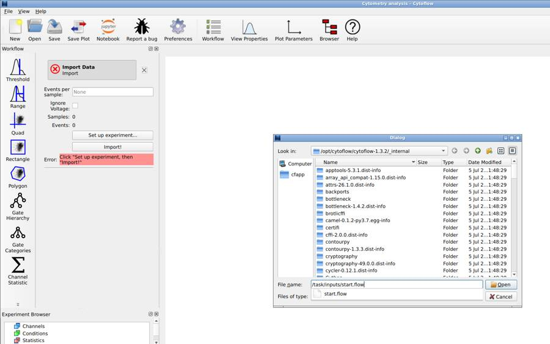
text(await tools.exec_command({cmd:"cu click 1311 744","max_output_tokens":1000}));
text(await tools.exec_command({cmd:"cu screenshot /tmp/screen.png","max_output_tokens":1000}));image((await tools.view_image({path:"/tmp/screen.png"})).image_url);
Script completed Wall time 0.2 seconds Output:
{"chunk_id":"f2c409","wall_time_seconds":0.000004444,"exit_code":0,"original_token_count":0,"output":""}{"chunk_id":"08f78b","wall_time_seconds":0.000004737,"exit_code":0,"original_token_count":4,"output":"/tmp/screen.png\n"}
text(await tools.exec_command({cmd:"cu click 749 450","max_output_tokens":1000}));
text(await tools.clock__curr_time({}));
Script completed
Wall time 0.1 seconds
Output:
{"chunk_id":"361af9","wall_time_seconds":0.000004796,"exit_code":0,"original_token_count":0,"output":""}
{"current_time":"2026-11-06 00:33:21 UTC"}const r=await Promise.allSettled([
tools.web__run({search_query:[{q:'site.cellsignal.com 9669 cleaved caspase 3 Alexa Fluor 488 flow cytometry dilution'},{q:'site.biolegend.com 423105 Zombie NIR excitation emission'}],response_length:"long"}),
tools.exec_command({cmd:"cu screenshot /tmp/screen.png","max_output_tokens":1000})
]);for(let i=0;i<r.length;i++)text({i,result:r[i]});image((await tools.view_image({path:"/tmp/screen.png"})).image_url);
Script completed Wall time 1.8 seconds Output:
{"i":0,"result":{"status":"fulfilled","value":"Cleaved Caspase-3 (Asp175) Antibody (Alexa Fluor® 488 Conjugate) (#9669) Datasheet With Images | Cell Signaling Technology (https://www.cellsignal.com/products/9669/datasheet?images=1&protocol=0)\nciteturn0search0 [wordlim: 200] Crawled: last month; #9669 ... Application | Dilution ... This Cell Signaling Technology antibody is conjugated to Alexa Fluor^{®} 488 fluorescent dye and tested in-house for direct flow cytometry analysis in human cells. ... Image: Flow Cytometry Image 1: Cleaved Caspase-3 (Asp175) Antibody (Alexa Fluor<sup>®</sup> 488 Conjugate)\n\nRevision 4\n\n#9669\n\nStore at +4C\n\nCleaved Caspase-3 (Asp175) Antibody (Alexa Fluor^{®} 488 Conjugate)\n\nFor Research Use Only. Not for Use in Diagnostic Procedures.\n\nApplications:\nFC-FP\n\nReactivity:\nH M R Mk\n\nSensitivity:\nEndogenous\n\nSource/Isotype:\nRabbit\n\nUniProt ID:\n#P42574\n\nEntrez-Gene Id:\n836\n\n### Product Usage Information\n\nApplication | Dilution\n--- | ---\nFlow Cytometry (Fixed/Permeabilized) | 1:50\n\n### Storage\n\nSupplied in PBS (pH 7.2), less than 0.1% sodium azide and 2 mg/ml BSA. Store at 4°C. Do not aliquot the antibody. Protect from light. Do not freeze.\n\n### Specificity/Sensitivity\n\nCleaved Caspase-3 (Asp175) Antibody (Alexa Fluor^{®} 488 Conjugate) detects endogenous levels of the large fragment (17/19 kDa) of activated caspase-3 resulting from cleavage adjacent to aspartic acid 175. This antibody conjugate does not recognize full length caspase-3 or other cleaved caspases.\n\n### Species predicted to react based on 100% sequence homology\n\nBovine, Dog, Pig\n\n### Source / Purification\n\nPolyclonal antibodies are produced by immunizing animals with a synthetic peptide corresponding to amino-terminal residues adjacent to Asp175 of human caspase-3. Antibodies are purified by protein A and peptide affinity chromatography. The antibody was conjugated to Alexa Fluor^{®} 488 under optimal conditions with an F/P ratio of 2-6.\n\n### Description\n\nThis Cell Signaling Technology antibody is conjugated to Alexa Fluor^{®} 488 fluorescent dye and tested in-house for direct flow cytometry analysis in human cells. The antibody is expected to exhibit the same species cross-reactivity as the unconjugated Cleaved Caspase-3 (Asp175) Antibody #9661.\n\n### Background\n\nCaspase-3 (CPP-32, Apopain, Yama, SCA-1) is a critical executioner of apoptosis, as it is either partially or totally responsible for the proteolytic cleavage of many key proteins, such as the nuclear enzyme poly (ADP-ribose) polymerase (PARP) (1). Activation of caspase-3 requires proteolytic processing of its inactive zymogen into activated p17 and p12 fragments. Cleavage of caspase-3 requires the aspartic acid residue at the P1 position (2).\n\n### Background References\n\n 1. cite1†Fernandes-Alnemri, T. et al. (1994) J Biol Chem 269, 30761-4.†pubmed.ncbi.nlm.nih.gov 2. Nicholson, D.W. et al. (1995) Nature 376, 37-43.\n\n### Species Reactivity\n\nSpecies reactivity is determined by testing in at least one approved application (e.g., western blot).\n\n### Applications Key\n\nFC-FP: Flow Cytometry (Fixed/Permeabilized)\n\n### Cross-Reactivity Key\n\nH: Human M: Mouse R: Rat Mk: Monkey\n\nRevision 4\n\n#9669\n\nCleaved Caspase-3 (Asp175) Antibody (Alexa Fluor^{®} 488 Conjugate)\n\nImage: Cell Signaling Technology Logo\n\nFlow cytometric analysis of Jurkat cells, untreated (blue) or treated with etoposide #2200 (25 μM, overnight; green), using Cleaved Caspase-3 (Asp175) Antibody (Alexa Fluor^{®} 488 Conjugate) (solid lines) or concentration-matched Rabbit (DA1E) mAb IgG XP^{®} Isotype Control (Alexa Fluor^{®} 488 Conjugate) #2975 (dashed line).\n\nImage: Flow Cytometry Image 1: Cleaved Caspase-3 (Asp175) Antibody (Alexa Fluor<sup>®</sup> 488 Conjugate)--------------------------------------------------------------------------------\nCleaved Caspase-3 (Asp175) Antibody (Alexa Fluor® 488 Conjugate) (#9669) Datasheet Without Images | Cell Signaling Technology (https://media.cellsignal.com/pdf/9669.pdf)\nciteturn0search12 [wordlim: 200] Published: last year; #9669 ... orders@cellsignal.com ... <th>Dilution</th> ... <td>This Cell Signaling Technology antibody is conjugated to Alexa Fluor® 488 fluorescent dye and tested in-house for direct flow cytometry analysis in human cells. ... The antibody is expected to exhibit the same species cross-reactivity as the unconjugated Cleaved Caspase-3 (Asp175) Antibody #9661.</td>\nRevision 4\n\nCleaved Caspase-3 (Asp175) Antibody (Alexa Fluor® 488 Conjugate)\n\nStore at +4C \n#9669\n\nCell Signaling Technology\n\nOrders: 877-616-CELL (2355) \norders@cellsignal.com\n\nSupport: 877-678-TECH (8324)\n\nWeb: info@cellsignal.com \ncellsignal.com\n\n3 Trask Lane | Danvers | Massachusetts | 01923 | USA\n\nFor Research Use Only. Not for Use in Diagnostic Procedures.\n\n<table id=\"e1\">\n<tr>\n<th>Applications:</th>\n<th>Reactivity:</th>\n<th>Sensitivity:</th>\n<th>Source/Isotype:</th>\n<th>UniProt ID:</th>\n<th>Entrez-Gene Id:</th>\n</tr>\n<tr>\n<td>FC-FP</td>\n<td>H M R Mk</td>\n<td>Endogenous</td>\n<td>Rabbit</td>\n<td>#P42574</td>\n<td>836</td>\n</tr>\n</table>\n\n<table id=\"e2\">\n<tr>\n<th>Product Usage Information</th>\n<th>Application</th>\n<th>Dilution</th>\n</tr>\n<tr>\n<td>Storage</td>\n<td>Flow Cytometry (Fixed/Permeabilized)</td>\n<td>1:50</td>\n</tr>\n<tr>\n<td>Storage</td>\n<td>Supplied in PBS (pH 7.2), less than 0.1% sodium azide and 2 mg/ml BSA. Store at 4°C. Do not aliquot the antibody. Protect from light. Do not freeze.</td>\n<td></td>\n</tr>\n<tr>\n<td>Specificity/Sensitivity</td>\n<td>Cleaved Caspase-3 (Asp175) Antibody (Alexa Fluor® 488 Conjugate) detects endogenous levels of the large fragment (17/19 kDa) of activated caspase-3 resulting from cleavage adjacent to aspartic acid 175. This antibody conjugate does not recognize full length caspase-3 or other cleaved caspases.</td>\n<td></td>\n</tr>\n<tr>\n<td>Species predicted to re
… [23,512 more characters not shown]{"i":1,"result":{"status":"fulfilled","value":{"chunk_id":"9147a4","wall_time_seconds":0.000004759,"exit_code":0,"original_token_count":4,"output":"/tmp/screen.png\n"}}}
text(await tools.exec_command({cmd:"cu click 232 189 && cu key ctrl+shift+s","max_output_tokens":1000}));
text(await tools.exec_command({cmd:"cu screenshot /tmp/screen.png","max_output_tokens":1000}));image((await tools.view_image({path:"/tmp/screen.png"})).image_url);
Script completed Wall time 0.3 seconds Output:
{"chunk_id":"fe774e","wall_time_seconds":0.000003757,"exit_code":0,"original_token_count":0,"output":""}{"chunk_id":"9e3b1a","wall_time_seconds":0.000004805,"exit_code":0,"original_token_count":4,"output":"/tmp/screen.png\n"}
text(await tools.exec_command({cmd:"cu click 21 29","max_output_tokens":1000}));text(await tools.exec_command({cmd:"cu screenshot /tmp/screen.png","max_output_tokens":1000}));image((await tools.view_image({path:"/tmp/screen.png"})).image_url);
Script completed Wall time 0.2 seconds Output:
{"chunk_id":"80338e","wall_time_seconds":0.000003413,"exit_code":0,"original_token_count":0,"output":""}{"chunk_id":"2985c8","wall_time_seconds":0.000003611,"exit_code":0,"original_token_count":4,"output":"/tmp/screen.png\n"}
text(await tools.exec_command({cmd:"cu click 72 102","max_output_tokens":1000}));text(await tools.exec_command({cmd:"cu screenshot /tmp/screen.png","max_output_tokens":1000}));image((await tools.view_image({path:"/tmp/screen.png"})).image_url);
Script completed Wall time 0.2 seconds Output:
{"chunk_id":"4aada5","wall_time_seconds":0.000003469,"exit_code":0,"original_token_count":0,"output":""}{"chunk_id":"8fabfa","wall_time_seconds":0.000003856,"exit_code":0,"original_token_count":4,"output":"/tmp/screen.png\n"}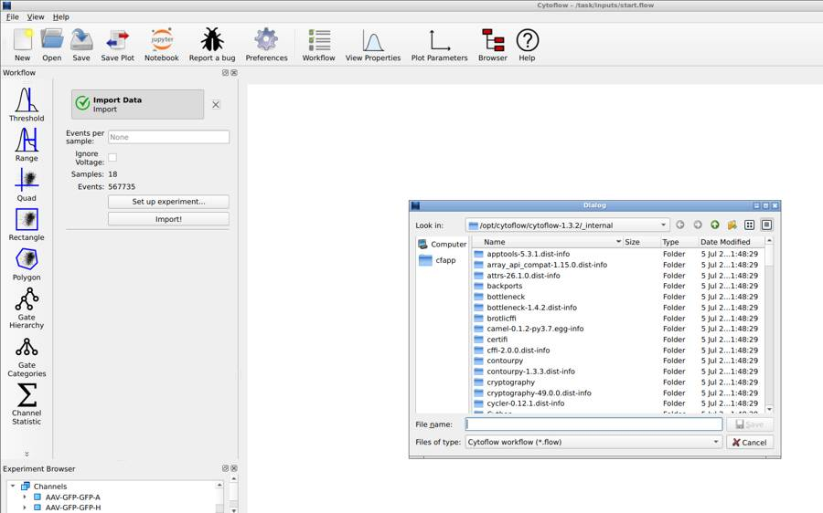
text(await tools.exec_command({cmd:"cu paste /task/outputs/workflow.flow && cu click 1312 744","max_output_tokens":1000}));text(await tools.exec_command({cmd:"cu click 47 455 && cu screenshot /tmp/screen.png","max_output_tokens":1000}));image((await tools.view_image({path:"/tmp/screen.png"})).image_url);
Script completed Wall time 1.6 seconds Output:
{"chunk_id":"0be1ef","wall_time_seconds":1.2881283620000001,"exit_code":0,"original_token_count":0,"output":""}{"chunk_id":"82901b","wall_time_seconds":0.012124994,"exit_code":0,"original_token_count":4,"output":"/tmp/screen.png\n"}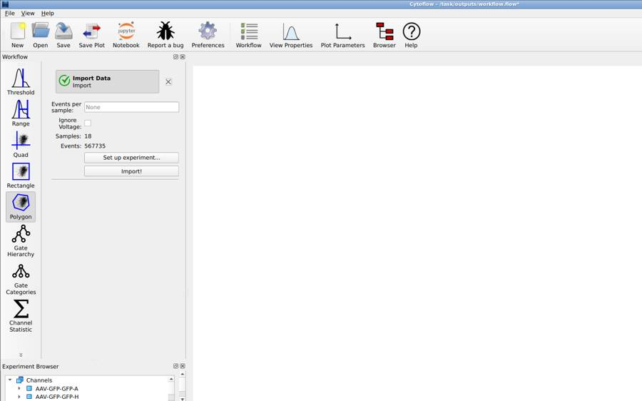
text(await tools.exec_command({cmd:"cu screenshot /tmp/screen.png","max_output_tokens":1000}));image((await tools.view_image({path:"/tmp/screen.png"})).image_url);
Script completed Wall time 0.1 seconds Output:
{"chunk_id":"6d66dd","wall_time_seconds":0.000005354,"exit_code":0,"original_token_count":4,"output":"/tmp/screen.png\n"}
text(await tools.exec_command({cmd:"cu click 273 324 && cu type cells && cu click 356 354","max_output_tokens":1000}));text(await tools.exec_command({cmd:"cu screenshot /tmp/screen.png","max_output_tokens":1000}));image((await tools.view_image({path:"/tmp/screen.png"})).image_url);
Script completed Wall time 0.5 seconds Output:
{"chunk_id":"1a4057","wall_time_seconds":0.194819109,"exit_code":0,"original_token_count":0,"output":""}{"chunk_id":"ce06f1","wall_time_seconds":0.00000618,"exit_code":0,"original_token_count":4,"output":"/tmp/screen.png\n"}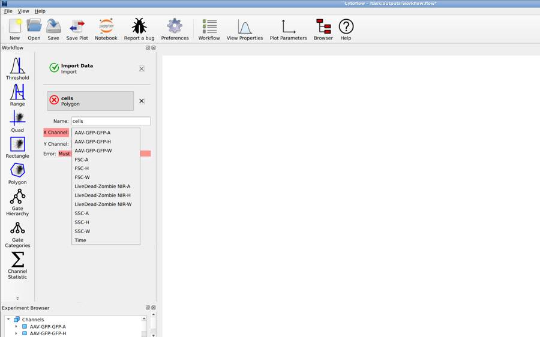
text(await tools.exec_command({cmd:"cu click 225 426 && cu click 357 384","max_output_tokens":1000}));text(await tools.exec_command({cmd:"cu screenshot /tmp/screen.png","max_output_tokens":1000}));image((await tools.view_image({path:"/tmp/screen.png"})).image_url);
Script completed Wall time 0.3 seconds Output:
{"chunk_id":"7d26f3","wall_time_seconds":0.062233192,"exit_code":0,"original_token_count":0,"output":""}{"chunk_id":"cf888d","wall_time_seconds":0.000004773,"exit_code":0,"original_token_count":4,"output":"/tmp/screen.png\n"}
text(await tools.exec_command({cmd:"cu click 224 602 && cu click 654 73","max_output_tokens":1000}));text(await tools.exec_command({cmd:"cu screenshot /tmp/screen.png","max_output_tokens":1000}));image((await tools.view_image({path:"/tmp/screen.png"})).image_url);
Script completed Wall time 0.3 seconds Output:
{"chunk_id":"4c71e4","wall_time_seconds":0.06330524,"exit_code":0,"original_token_count":0,"output":""}{"chunk_id":"5e05dc","wall_time_seconds":0.000005319,"exit_code":0,"original_token_count":4,"output":"/tmp/screen.png\n"}
text(await tools.exec_command({cmd:"cu screenshot /tmp/screen.png","max_output_tokens":1000}));image((await tools.view_image({path:"/tmp/screen.png"})).image_url);
Script completed Wall time 0.2 seconds Output:
{"chunk_id":"615932","wall_time_seconds":0.000004346,"exit_code":0,"original_token_count":4,"output":"/tmp/screen.png\n"}
text(await tools.exec_command({cmd:"cu click 755 9 double && cu click 755 9 double && cu click 650 70","max_output_tokens":1000}));text(await tools.exec_command({cmd:"cu screenshot /tmp/screen.png","max_output_tokens":1000}));image((await tools.view_image({path:"/tmp/screen.png"})).image_url);
Script completed Wall time 0.7 seconds Output:
{"chunk_id":"866983","wall_time_seconds":0.369172951,"exit_code":0,"original_token_count":0,"output":""}{"chunk_id":"d6853c","wall_time_seconds":0.000005427,"exit_code":0,"original_token_count":4,"output":"/tmp/screen.png\n"}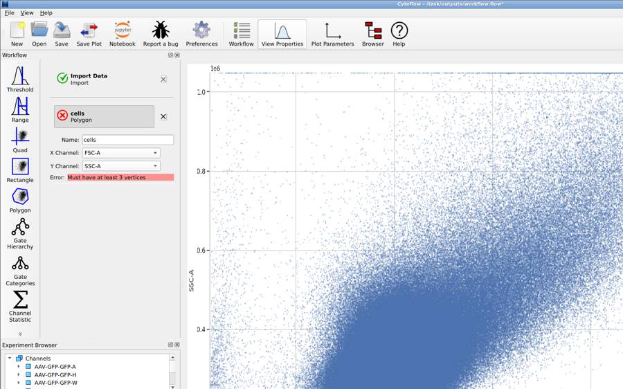
text(await tools.exec_command({cmd:"cu key alt+F10 && cu screenshot /tmp/screen.png","max_output_tokens":1000}));image((await tools.view_image({path:"/tmp/screen.png"})).image_url);
Script completed Wall time 0.2 seconds Output:
{"chunk_id":"6abd05","wall_time_seconds":0.000004821,"exit_code":0,"original_token_count":4,"output":"/tmp/screen.png\n"}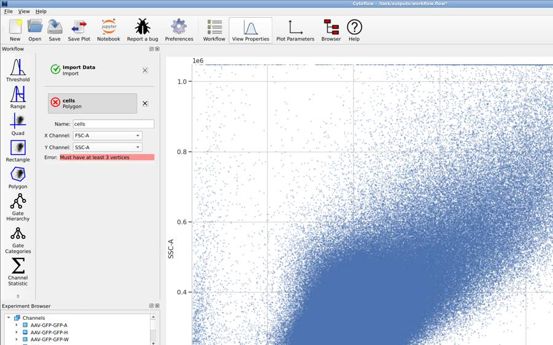
text(await tools.exec_command({cmd:"cu --help","max_output_tokens":3000}));
text(await tools.exec_command({cmd:"cu click 63 30","max_output_tokens":1000}));text(await tools.exec_command({cmd:"cu screenshot /tmp/screen.png","max_output_tokens":1000}));image((await tools.view_image({path:"/tmp/screen.png"})).image_url);
Script completed Wall time 0.3 seconds Output:
{"chunk_id":"0d5e5f","wall_time_seconds":0.000006006,"exit_code":1,"original_token_count":116,"output":"# Computer-use helper: the agent's only way to act on the screen.\n# cu screenshot [path] -> PNG of the screen (default /tmp/screen.png); prints path\n# cu click X Y [left|right|double]\n# cu move X Y | cu drag X1 Y1 X2 Y2 | cu scroll X Y up|down [N]\n# cu type \"text\" (keystrokes) | cu paste \"text\" (clipboard) | cu key KEYS (e.g. ctrl+s, Return)\n# cu cursor -> current mouse position\nexport DISPLAY=${DISPLAY:-:1}\ncmd=$1; shift\n"}{"chunk_id":"77fd8d","wall_time_seconds":0.000004425,"exit_code":0,"original_token_count":0,"output":""}{"chunk_id":"d5f05a","wall_time_seconds":0.000005845,"exit_code":0,"original_token_count":4,"output":"/tmp/screen.png\n"}text(await tools.exec_command({cmd:"cu key Escape && cu key alt+F8 && cu move 1350 820 && cu key Return","max_output_tokens":1000}));text(await tools.exec_command({cmd:"cu screenshot /tmp/screen.png","max_output_tokens":1000}));image((await tools.view_image({path:"/tmp/screen.png"})).image_url);
Script completed Wall time 0.3 seconds Output:
{"chunk_id":"93aea1","wall_time_seconds":0.000004274,"exit_code":0,"original_token_count":0,"output":""}{"chunk_id":"5fdc90","wall_time_seconds":0.000006226,"exit_code":0,"original_token_count":4,"output":"/tmp/screen.png\n"}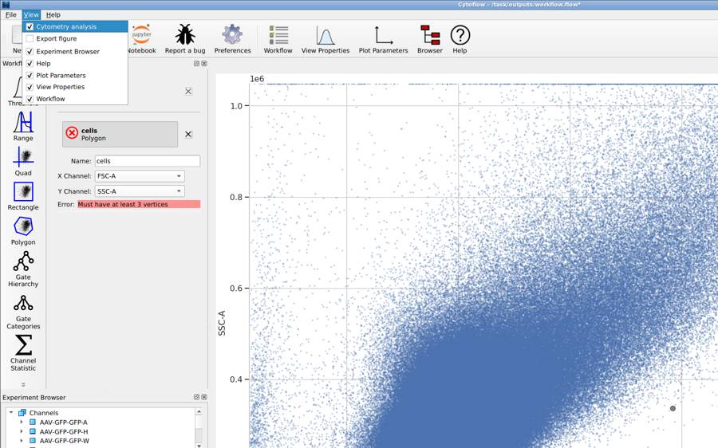
text(await tools.exec_command({cmd:"cu click 429 122 && cu click 752 9 right","max_output_tokens":1000}));text(await tools.exec_command({cmd:"cu screenshot /tmp/screen.png","max_output_tokens":1000}));image((await tools.view_image({path:"/tmp/screen.png"})).image_url);
Script completed Wall time 0.4 seconds Output:
{"chunk_id":"4ff2de","wall_time_seconds":0.062933115,"exit_code":0,"original_token_count":0,"output":""}{"chunk_id":"82c968","wall_time_seconds":0.000004478,"exit_code":0,"original_token_count":4,"output":"/tmp/screen.png\n"}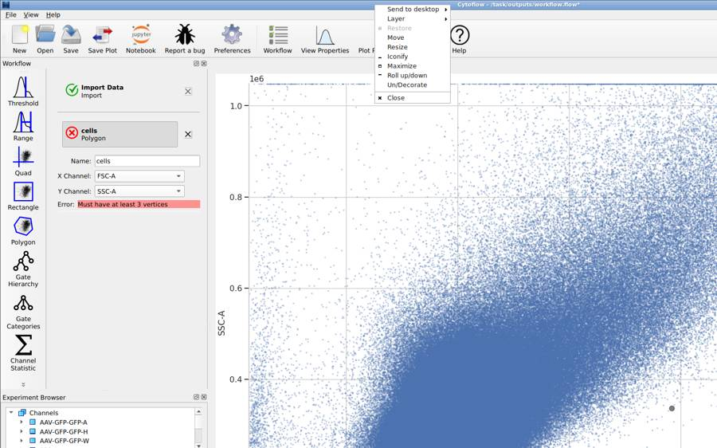
text(await tools.exec_command({cmd:"cu click 811 132","max_output_tokens":1000}));text(await tools.exec_command({cmd:"cu screenshot /tmp/screen.png","max_output_tokens":1000}));image((await tools.view_image({path:"/tmp/screen.png"})).image_url);
Script completed Wall time 0.3 seconds Output:
{"chunk_id":"e7298b","wall_time_seconds":0.000004618,"exit_code":0,"original_token_count":0,"output":""}{"chunk_id":"53b0a9","wall_time_seconds":0.000004492,"exit_code":0,"original_token_count":4,"output":"/tmp/screen.png\n"}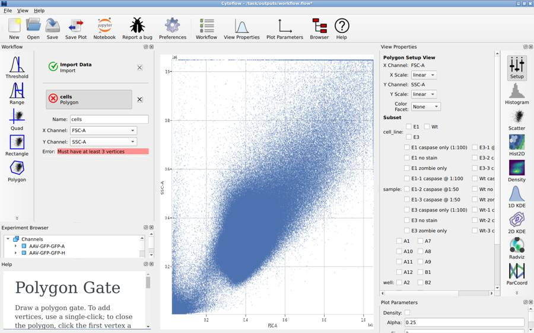
text(await tools.exec_command({cmd:"cu click 546 771 && cu click 586 804 && cu click 685 771 && cu click 1003 602 && cu click 1003 173 && cu click 684 309 && cu click 555 589 && cu click 546 771","max_output_tokens":1000}));text(await tools.exec_command({cmd:"cu screenshot /tmp/screen.png","max_output_tokens":1000}));image((await tools.view_image({path:"/tmp/screen.png"})).image_url);
Script completed Wall time 1.0 seconds Output:
{"chunk_id":"f3410b","wall_time_seconds":0.689697963,"exit_code":0,"original_token_count":0,"output":""}{"chunk_id":"c6ebba","wall_time_seconds":0.000004319,"exit_code":0,"original_token_count":4,"output":"/tmp/screen.png\n"}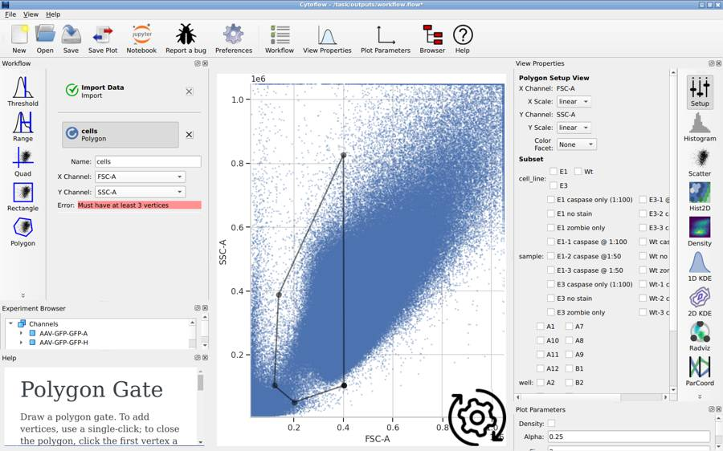
text(await tools.exec_command({cmd:"cu screenshot /tmp/screen.png","max_output_tokens":1000}));image((await tools.view_image({path:"/tmp/screen.png"})).image_url);
Script completed Wall time 0.1 seconds Output:
{"chunk_id":"03294a","wall_time_seconds":0.00000602,"exit_code":0,"original_token_count":4,"output":"/tmp/screen.png\n"}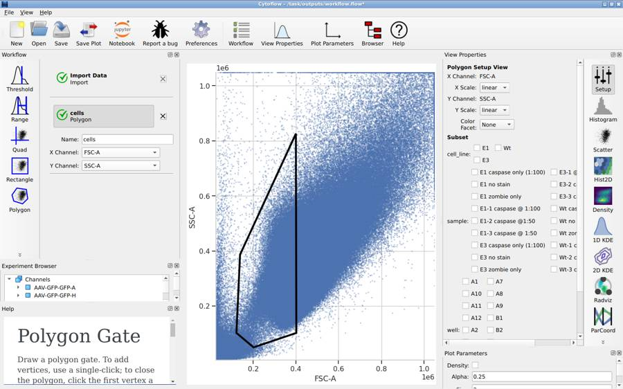
text(await tools.exec_command({cmd:"cu click 560 770 && cu click 585 800 && cu click 700 765 && cu click 985 600 && cu click 985 180 && cu click 690 285 && cu click 570 550 && cu click 560 770","max_output_tokens":1000}));text(await tools.exec_command({cmd:"cu screenshot /tmp/screen.png","max_output_tokens":1000}));image((await tools.view_image({path:"/tmp/screen.png"})).image_url);
Script completed Wall time 1.0 seconds Output:
{"chunk_id":"199303","wall_time_seconds":0.695465765,"exit_code":0,"original_token_count":0,"output":""}{"chunk_id":"937d4c","wall_time_seconds":0.000004375,"exit_code":0,"original_token_count":4,"output":"/tmp/screen.png\n"}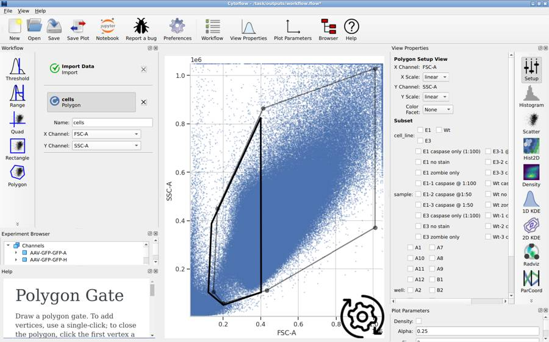
text(await tools.exec_command({cmd:"cu click 408 714 && cu click 408 614 && cu click 47 454","max_output_tokens":1000}));text(await tools.exec_command({cmd:"cu screenshot /tmp/screen.png","max_output_tokens":1000}));image((await tools.view_image({path:"/tmp/screen.png"})).image_url);
Script completed Wall time 0.5 seconds Output:
{"chunk_id":"ff93d4","wall_time_seconds":0.167438388,"exit_code":0,"original_token_count":0,"output":""}{"chunk_id":"38bc18","wall_time_seconds":0.000004569,"exit_code":0,"original_token_count":4,"output":"/tmp/screen.png\n"}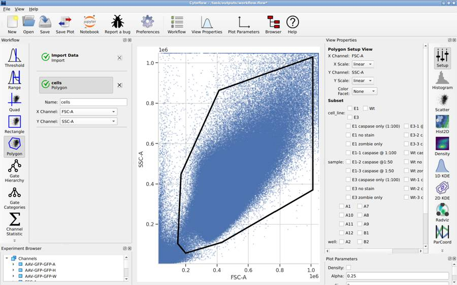
text(await tools.exec_command({cmd:"cu screenshot /tmp/screen.png","max_output_tokens":1000}));image((await tools.view_image({path:"/tmp/screen.png"})).image_url);
Script completed Wall time 0.1 seconds Output:
{"chunk_id":"de72d0","wall_time_seconds":0.000005127,"exit_code":0,"original_token_count":4,"output":"/tmp/screen.png\n"}
text(await tools.exec_command({cmd:"cu click 270 410 && cu type singlet_region && cu click 354 440 && cu key f && cu key Return && cu click 355 469 && cu key f && cu key Down && cu key Return && cu click 1085 395 && cu click 408 783","max_output_tokens":1000}));text(await tools.exec_command({cmd:"cu screenshot /tmp/screen.png","max_output_tokens":1000}));image((await tools.view_image({path:"/tmp/screen.png"})).image_url);
Script completed Wall time 1.1 seconds Output:
{"chunk_id":"60b10b","wall_time_seconds":0.814371599,"exit_code":0,"original_token_count":0,"output":""}{"chunk_id":"f9f3f6","wall_time_seconds":0.0000063,"exit_code":0,"original_token_count":4,"output":"/tmp/screen.png\n"}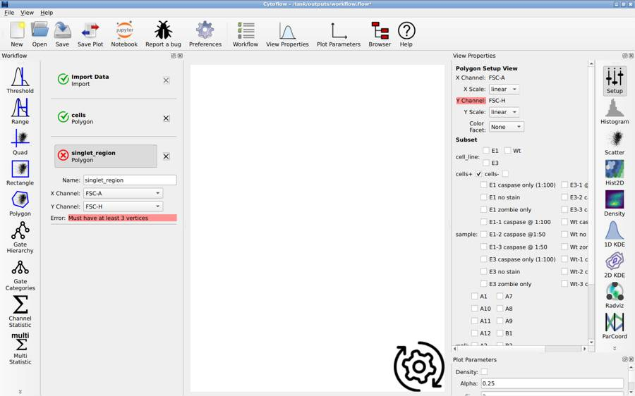
text(await tools.exec_command({cmd:"cu screenshot /tmp/screen.png","max_output_tokens":1000}));image((await tools.view_image({path:"/tmp/screen.png"})).image_url);
Script completed Wall time 0.1 seconds Output:
{"chunk_id":"add668","wall_time_seconds":0.000006013,"exit_code":0,"original_token_count":4,"output":"/tmp/screen.png\n"}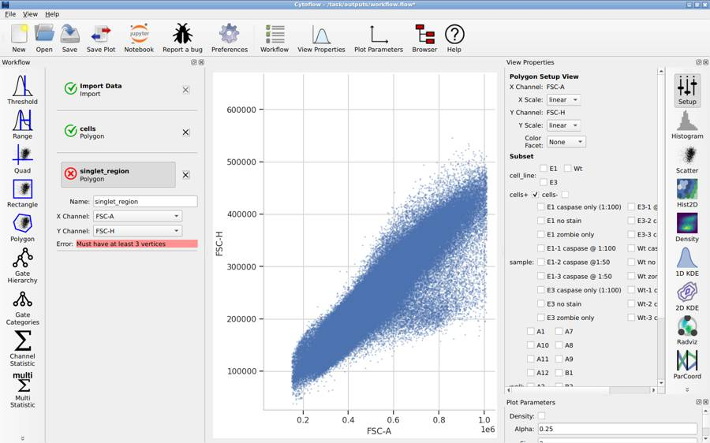
text(await tools.exec_command({cmd:"cu click 593 787 && cu click 706 696 && cu click 982 489 && cu click 982 329 && cu click 706 600 && cu click 593 722 && cu click 593 787 && cu key ctrl+s","max_output_tokens":1000}));text(await tools.exec_command({cmd:"cu screenshot /tmp/screen.png","max_output_tokens":1000}));image((await tools.view_image({path:"/tmp/screen.png"})).image_url);
Script completed Wall time 0.9 seconds Output:
{"chunk_id":"8e956c","wall_time_seconds":0.616094205,"exit_code":0,"original_token_count":0,"output":""}{"chunk_id":"ab8082","wall_time_seconds":0.00000511,"exit_code":0,"original_token_count":4,"output":"/tmp/screen.png\n"}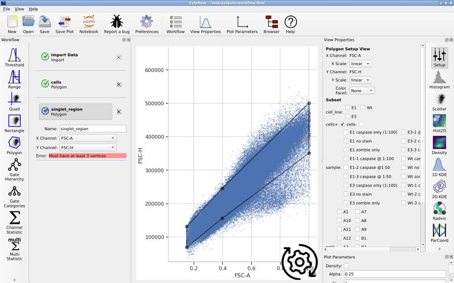
text(await tools.exec_command({cmd:"cu click 45 527","max_output_tokens":1000}));text(await tools.exec_command({cmd:"cu screenshot /tmp/screen.png","max_output_tokens":1000}));image((await tools.view_image({path:"/tmp/screen.png"})).image_url);
Script completed Wall time 0.3 seconds Output:
{"chunk_id":"d6aad8","wall_time_seconds":0.000004838,"exit_code":0,"original_token_count":0,"output":""}{"chunk_id":"b96603","wall_time_seconds":0.000004766,"exit_code":0,"original_token_count":4,"output":"/tmp/screen.png\n"}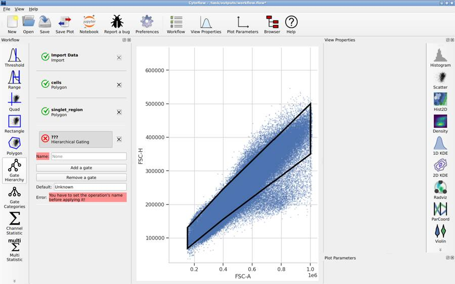
text(await tools.exec_command({cmd:"cu click 272 495 && cu key ctrl+a && cu type singlets && cu click 244 533","max_output_tokens":1000}));text(await tools.exec_command({cmd:"cu screenshot /tmp/screen.png","max_output_tokens":1000}));image((await tools.view_image({path:"/tmp/screen.png"})).image_url);
Script completed Wall time 0.6 seconds Output:
{"chunk_id":"7cde3e","wall_time_seconds":0.295561992,"exit_code":0,"original_token_count":0,"output":""}{"chunk_id":"b2d59b","wall_time_seconds":0.000004973,"exit_code":0,"original_token_count":4,"output":"/tmp/screen.png\n"}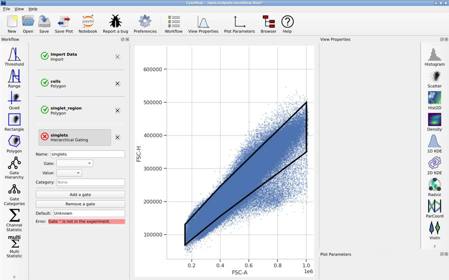
text(await tools.web__run({search_query:[{q:'site.cytoflow.readthedocs.io Hierarchical gating operation boolean GUI polygon subset gate'}],response_length:"long"}));
text(await tools.exec_command({cmd:"cu click 375 440 && cu screenshot /tmp/screen.png","max_output_tokens":1000}));image((await tools.view_image({path:"/tmp/screen.png"})).image_url);
Script completed Wall time 1.0 seconds Output:
cytoflowgui.op_plugins.hierarchy — Cytoflow 0.0 documentation (https://cytoflow.readthedocs.io/en/stable/dev_manual/api/cytoflowgui.op_plugins.hierarchy.html)
citeturn1search0 [wordlim: 200] Crawled: 4 months ago; The `Hierarchical Gating` operation converts a list of gates into a categorical variable to enable straightforward analysis. ... A user defines a threshold gate to separate CD64+ cells (macrophages) from the rest of the events, then they use a polygon gate to distinguish the CD19+/CD3- cells (B cells) from everything else. ... class cytoflowgui.op_plugins.hierarchy.GateHandler(*args: Any, **kwargs: Any)[source]#
# cytoflowgui.op_plugins.hierarchy#
Convert a hierarchical (binary) gating strategy into a categorical condition.
Hierarchical gating strategies are quite common when doing manual gating. For example, an 8-stain panel can separate monocytes into macrophages, B cells, NK cells, NKT cells, T cells, DCs, and neutrophils – but then, because these states are mutually exclusive, a reasonable question is “how much of each are there?” `Cytoflow` can define these gates, but because it does not have any concept of nested gates, plotting and analyzing this gating strategy can be challenging.
The `Hierarchical Gating` operation converts a list of gates into a categorical variable to enable straightforward analysis. For example, monocytes stained with CD64, CD3 and CD19 can differentiate between macrophages and B cells. A user defines a threshold gate to separate CD64+ cells (macrophages) from the rest of the events, then they use a polygon gate to distinguish the CD19+/CD3- cells (B cells) from everything else. The `Hierarchical Gating` operation can take these two gates and create a categorical condition with the values `Macrophages`, `B_Cells`, and `Unknown`.
The operation is set up by providing a list of conditions, values for those conditions, and the category that condition indicates. Figuring out an event’s category is done by evaluating the hierarchical gates in order. For each event, the first condition/value pair is considered. If that event has that value, its new category is set accordingly. If not, then the next gate in the list is considered. If the event is a member in none of the gates, it receives the category listed in the `Default` attribute.
Name
The name of the new condition that this operation creates.
Gates
The ordered list of gates that implement the gating hierarchy. For each, you need to specify:
* The name of the pre-existing condition
* The value that the condition has to have to indicate membership in this class.
* The name of the new category.
Default
The name that unclassified events will have in the new categorical condition.
--------------------------------------------------------------------------------
Hierarchical Gating — Cytoflow 1.3.2 documentation (https://cytoflow.readthedocs.io/en/latest/dev_manual/tutorials/hierarchical_gating.html)
citeturn1search1 [wordlim: 200] Crawled: 4 months ago; A common strategy for manual gating is hierarchical gating – a skilled cytometrist examines sets of one- or two-dimensional plots, one after another, to separate cells into “positive” and “negative” populations. ... tubes = [flow.Tube(file='data/Saeys_11.fcs', conditions = {"Tube" : "11"}), ... single_gate = flow.PolygonOp(name = "Single_Cell", ... The `HierarchyOp` operation uses an ordered series of gates to create a new categorical condition. ... subset = "Single_Cell == True & Live == True").apply(ex_hierarchy)
# Hierarchical Gating#
A common strategy for manual gating is hierarchical gating – a skilled cytometrist examines sets of one- or two-dimensional plots, one after another, to separate cells into “positive” and “negative” populations. While I like to think that modern cytometry has better, less biased tools to accomplish this task, it is still a necessary one in many contexts, and `Cytoflow` supports it.
This notebook demonstrates a hierarchical gating scheme from `Saeys Y, Van Gassen S, Lambrecht BN. Computational flow cytometry: helping to make sense of high-dimensional immunology data. Nature Reviews Immunology 16:449-462 (2016)`. Our question here is a basic one – what is the count of each cell type in each tube in the six tubes in the experiment? The data were downloaded from the Sayes Lab github and compensated using the bleedthrough matrix in the provided FlowJo workspace before being re-saved by `Cytoflow` – no other data preprocessing was applied.
We want to quantify NK, NK T, T and B cells; neutrophils, DCs, basophils, and macrophages. ## Gate single cells and live cells#
First, gate on `FSC_A` and `FSC-H` to separate single cells from debris and clumps.
single_gate = flow.PolygonOp(name = "Single_Cell",
xchannel = "FSC_A",
ychannel = "FSC_H")
single_gate.default_view(density = True,
huescale = "log",
interactive = True).plot(ex, gridsize = 100)
Figure
ex_single = single_gate.apply(ex)
Next, gate on `FSC_A` and `Live_Dead` to find live cells. Remember, dead cells are the positive population!
live_gate = flow.PolygonOp(name = "Live",
xchannel = "FSC_A",
ychannel = "Live_Dead",
yscale = "logicle")
live_gate.default_view(density = True,
huescale = "log",
subset = "Single_Cell == True",
interactive = True).plot(ex_single, gridsize = 100)
Figure
ex_live = live_gate.apply(ex_single)
## Gate immune cells#
Now, we’ll set up a single gate for each immunological population we’re interested in. Here, we are not looking at subsets defined by previo
… [29,358 more characters not shown]{"chunk_id":"7c77dd","wall_time_seconds":0.016902067,"exit_code":0,"original_token_count":4,"output":"/tmp/screen.png\n"}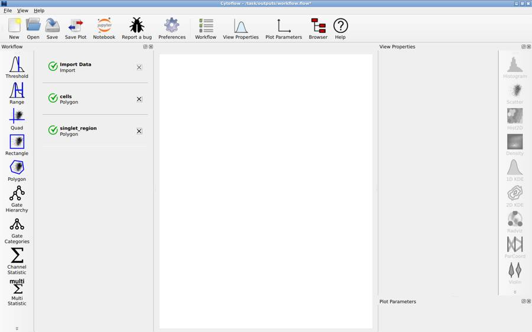
text(await tools.exec_command({cmd:"cu click 240 357 && cu click 263 409 && cu key ctrl+a && cu type singlets && cu key Tab && cu click 46 246","max_output_tokens":1000}));text(await tools.exec_command({cmd:"cu screenshot /tmp/screen.png","max_output_tokens":1000}));image((await tools.view_image({path:"/tmp/screen.png"})).image_url);
Script completed Wall time 0.7 seconds Output:
{"chunk_id":"17ec73","wall_time_seconds":0.416177038,"exit_code":0,"original_token_count":0,"output":""}{"chunk_id":"c08f0e","wall_time_seconds":0.000004853,"exit_code":0,"original_token_count":4,"output":"/tmp/screen.png\n"}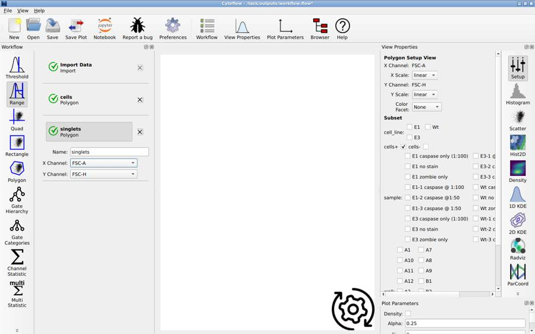
text(await tools.exec_command({cmd:"cu screenshot /tmp/screen.png","max_output_tokens":1000}));image((await tools.view_image({path:"/tmp/screen.png"})).image_url);
Script completed Wall time 0.1 seconds Output:
{"chunk_id":"f7acfa","wall_time_seconds":0.000004416,"exit_code":0,"original_token_count":4,"output":"/tmp/screen.png\n"}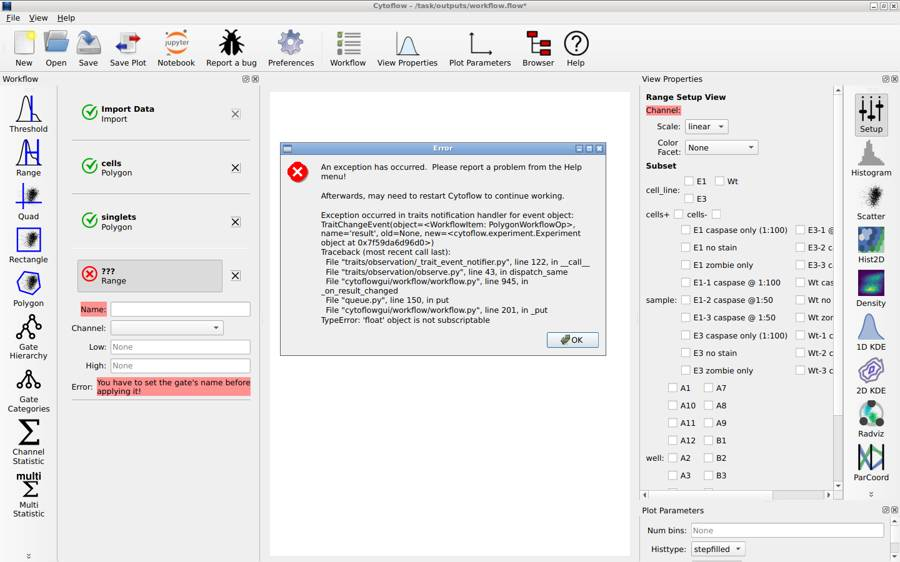
text(await tools.exec_command({cmd:"cu click 912 546 && cu click 268 496 && cu type live && cu click 344 525 && cu key l && cu key Return && cu click 1152 202 && cu key l && cu key l && cu key Return && cu click 1086 343","max_output_tokens":1000}));text(await tools.exec_command({cmd:"cu screenshot /tmp/screen.png","max_output_tokens":1000}));image((await tools.view_image({path:"/tmp/screen.png"})).image_url);
Script completed Wall time 0.8 seconds Output:
{"chunk_id":"a4396a","wall_time_seconds":0.560547184,"exit_code":0,"original_token_count":0,"output":""}{"chunk_id":"f48b1c","wall_time_seconds":0.000005953,"exit_code":0,"original_token_count":4,"output":"/tmp/screen.png\n"}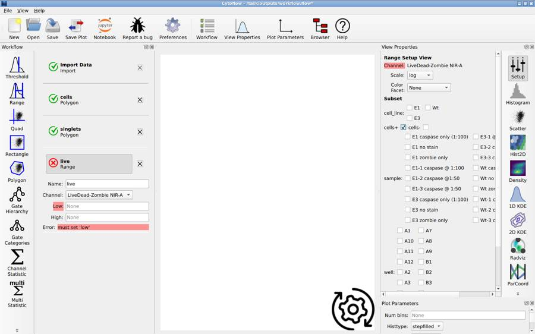
text(await tools.exec_command({cmd:"cu click 1152 203 && cu key End && cu key Return && cu scroll 1258 711 down 3","max_output_tokens":1000}));text(await tools.exec_command({cmd:"cu screenshot /tmp/screen.png","max_output_tokens":1000}));image((await tools.view_image({path:"/tmp/screen.png"})).image_url);
Script completed Wall time 0.6 seconds Output:
{"chunk_id":"47912b","wall_time_seconds":0.294751415,"exit_code":0,"original_token_count":0,"output":""}{"chunk_id":"bb37e7","wall_time_seconds":0.000004705,"exit_code":0,"original_token_count":4,"output":"/tmp/screen.png\n"}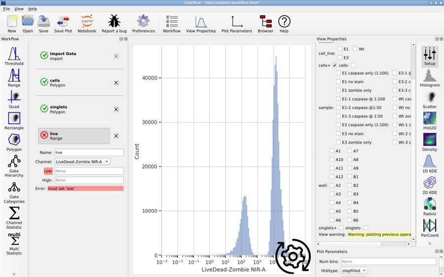
text(await tools.exec_command({cmd:"cu click 1105 739 && cu click 1097 293 && cu click 1097 462 && cu click 1280 378 && cu scroll 1240 301 up 5","max_output_tokens":1000}));text(await tools.exec_command({cmd:"cu screenshot /tmp/screen.png","max_output_tokens":1000}));image((await tools.view_image({path:"/tmp/screen.png"})).image_url);
Script completed Wall time 1.1 seconds Output:
{"chunk_id":"4e020d","wall_time_seconds":0.775882219,"exit_code":0,"original_token_count":0,"output":""}{"chunk_id":"47a15d","wall_time_seconds":0.000004744,"exit_code":0,"original_token_count":4,"output":"/tmp/screen.png\n"}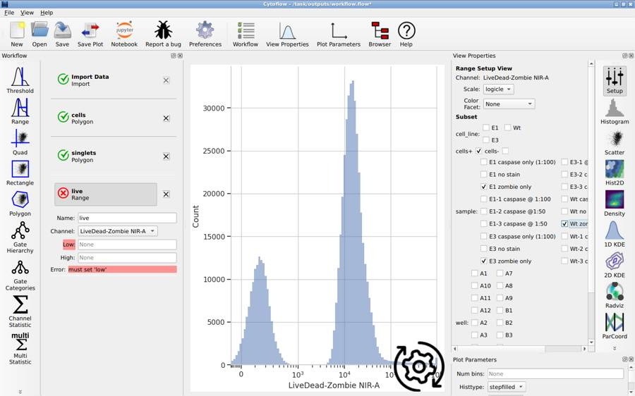
{
"duration_ms": 2000
}Wall time: 2.0018 seconds Sleep completed.
text(await tools.exec_command({cmd:"cu click 1200 235 && cu key c && cu key Return && cu screenshot /tmp/screen.png","max_output_tokens":1000}));image((await tools.view_image({path:"/tmp/screen.png"})).image_url);
Script completed Wall time 0.2 seconds Output:
{"chunk_id":"7a3236","wall_time_seconds":0.05615501,"exit_code":0,"original_token_count":4,"output":"/tmp/screen.png\n"}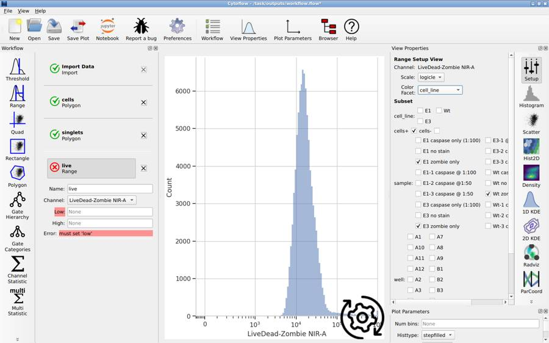
text(await tools.exec_command({cmd:"cu click 280 555 && cu type -1000000 && cu click 276 585 && cu type 50000 && cu key Tab && cu screenshot /tmp/screen.png","max_output_tokens":1000}));image((await tools.view_image({path:"/tmp/screen.png"})).image_url);
Script completed Wall time 0.7 seconds Output:
{"chunk_id":"63a339","wall_time_seconds":0.483027668,"exit_code":0,"original_token_count":4,"output":"/tmp/screen.png\n"}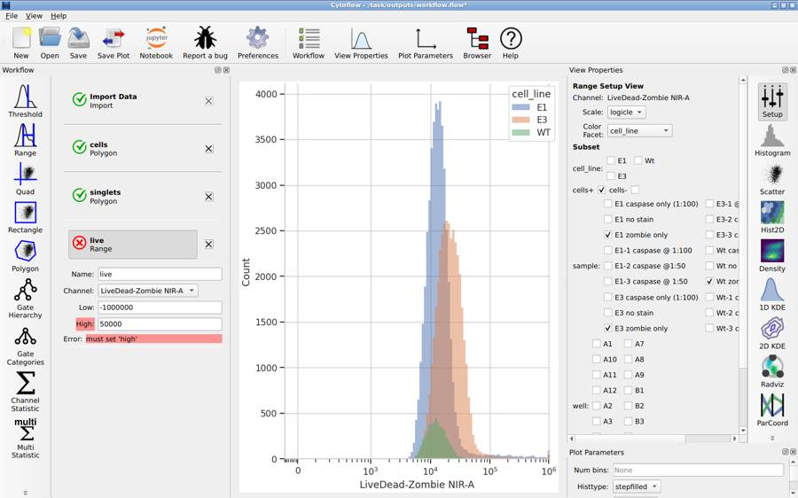
{
"duration_ms": 1500
}Wall time: 1.5027 seconds Sleep completed.
text(await tools.exec_command({cmd:"cu key ctrl+s && cu click 45 177","max_output_tokens":1000}));text(await tools.exec_command({cmd:"cu screenshot /tmp/screen.png","max_output_tokens":1000}));image((await tools.view_image({path:"/tmp/screen.png"})).image_url);
Script completed Wall time 0.3 seconds Output:
{"chunk_id":"8114d1","wall_time_seconds":0.000004196,"exit_code":0,"original_token_count":0,"output":""}{"chunk_id":"1a901d","wall_time_seconds":0.000005574,"exit_code":0,"original_token_count":4,"output":"/tmp/screen.png\n"}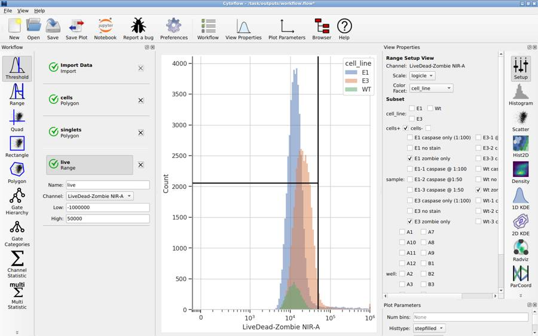
text(await tools.exec_command({cmd:"cu screenshot /tmp/screen.png","max_output_tokens":1000}));image((await tools.view_image({path:"/tmp/screen.png"})).image_url);
Script completed Wall time 0.1 seconds Output:
{"chunk_id":"ccfe70","wall_time_seconds":0.000005187,"exit_code":0,"original_token_count":4,"output":"/tmp/screen.png\n"}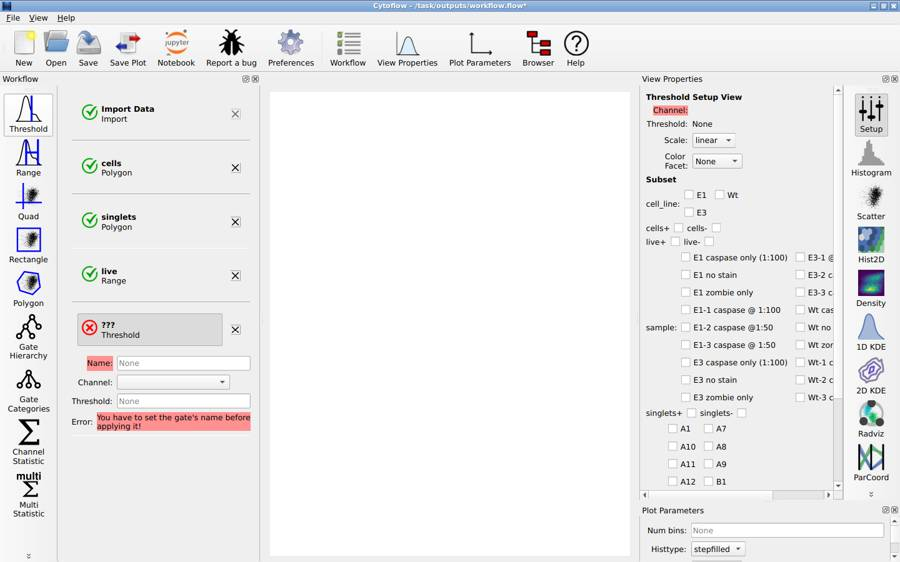
text(await tools.exec_command({cmd:"cu click 275 581 && cu type caspase_positive && cu click 353 612 && cu key Home && cu key Return && cu click 1166 225 && cu key End && cu key Return && cu click 1085 364 && cu click 1080 386 && cu click 1105 662 && cu click 1097 467 && cu click 1097 636 && cu click 1281 552 && cu click 1177 259 && cu key c && cu key Return","max_output_tokens":1000}));text(await tools.exec_command({cmd:"cu screenshot /tmp/screen.png","max_output_tokens":1000}));image((await tools.view_image({path:"/tmp/screen.png"})).image_url);
Script completed Wall time 1.7 seconds Output:
{"chunk_id":"1041b4","wall_time_seconds":1.407243096,"exit_code":0,"original_token_count":0,"output":""}{"chunk_id":"3ffe05","wall_time_seconds":0.000005748,"exit_code":0,"original_token_count":4,"output":"/tmp/screen.png\n"}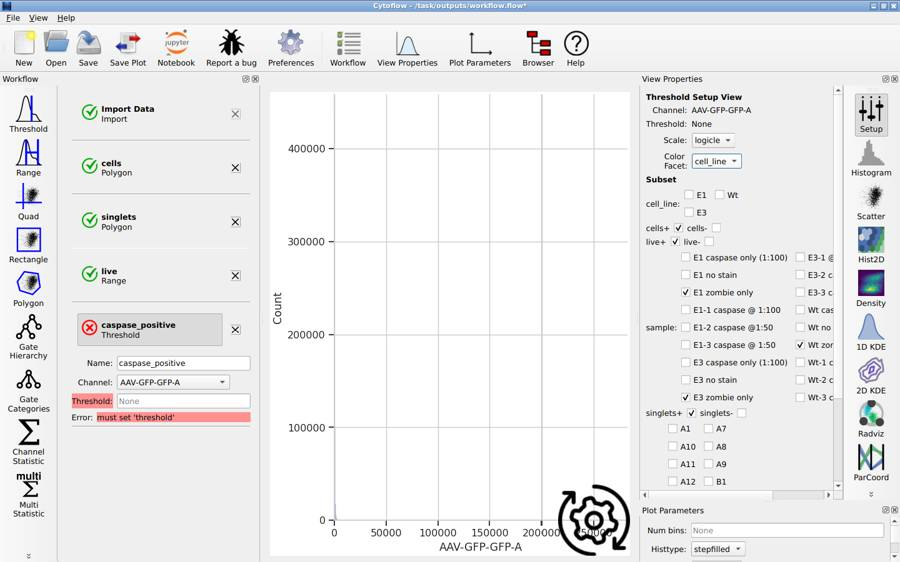
{
"duration_ms": 2000
}Wall time: 2.0024 seconds Sleep completed.
text(await tools.exec_command({cmd:"cu screenshot /tmp/screen.png","max_output_tokens":1000}));image((await tools.view_image({path:"/tmp/screen.png"})).image_url);
Script completed Wall time 0.1 seconds Output:
{"chunk_id":"a1da13","wall_time_seconds":0.000005202,"exit_code":0,"original_token_count":4,"output":"/tmp/screen.png\n"}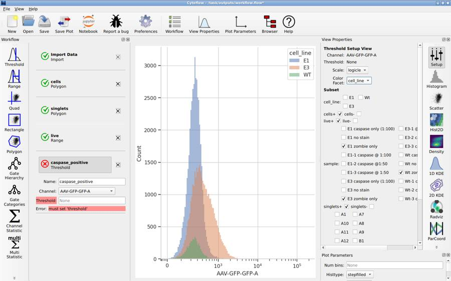
text(await tools.exec_command({cmd:"cu click 280 642 && cu type 2000 && cu key Tab && cu key ctrl+s","max_output_tokens":1000}));text(await tools.exec_command({cmd:"cu screenshot /tmp/screen.png","max_output_tokens":1000}));image((await tools.view_image({path:"/tmp/screen.png"})).image_url);
Script completed Wall time 0.4 seconds Output:
{"chunk_id":"a46313","wall_time_seconds":0.107547025,"exit_code":0,"original_token_count":0,"output":""}{"chunk_id":"2be71e","wall_time_seconds":0.000004399,"exit_code":0,"original_token_count":4,"output":"/tmp/screen.png\n"}{
"duration_ms": 1000
}Wall time: 1.0027 seconds Sleep completed.
text(await tools.exec_command({cmd:"cu click 45 694","max_output_tokens":1000}));text(await tools.exec_command({cmd:"cu screenshot /tmp/screen.png","max_output_tokens":1000}));image((await tools.view_image({path:"/tmp/screen.png"})).image_url);
Script completed Wall time 0.3 seconds Output:
{"chunk_id":"b04234","wall_time_seconds":0.000007866,"exit_code":0,"original_token_count":0,"output":""}{"chunk_id":"22f120","wall_time_seconds":0.000004852,"exit_code":0,"original_token_count":4,"output":"/tmp/screen.png\n"}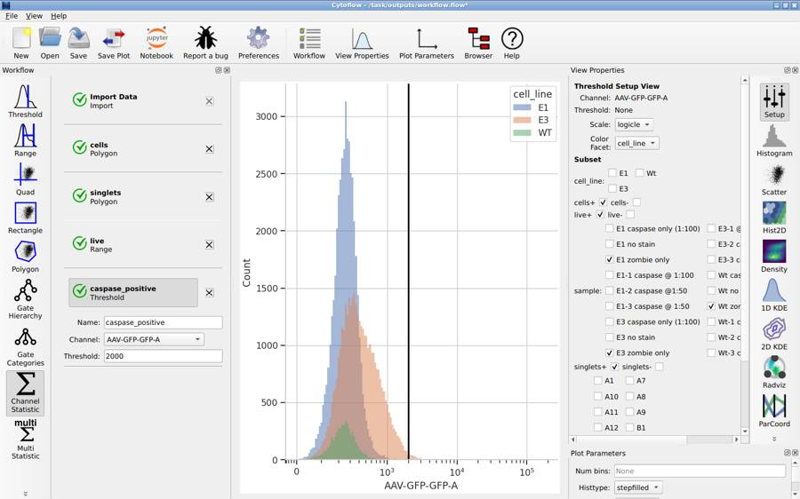
text(await tools.exec_command({cmd:"cu screenshot /tmp/screen.png","max_output_tokens":1000}));image((await tools.view_image({path:"/tmp/screen.png"})).image_url);
Script completed Wall time 0.1 seconds Output:
{"chunk_id":"a998cb","wall_time_seconds":0.000004229,"exit_code":0,"original_token_count":4,"output":"/tmp/screen.png\n"}text(await tools.exec_command({cmd:"cu click 271 670 && cu type n_all && cu click 346 698 && cu key f && cu key Return && cu click 319 729","max_output_tokens":1000}));text(await tools.exec_command({cmd:"cu screenshot /tmp/screen.png","max_output_tokens":1000}));image((await tools.view_image({path:"/tmp/screen.png"})).image_url);
Script completed Wall time 0.6 seconds Output:
{"chunk_id":"0e637a","wall_time_seconds":0.329562774,"exit_code":0,"original_token_count":0,"output":""}{"chunk_id":"76e638","wall_time_seconds":0.000004764,"exit_code":0,"original_token_count":4,"output":"/tmp/screen.png\n"}text(await tools.exec_command({cmd:"cu click 208 576 && cu click 366 813 && cu scroll 1392 716 down 5","max_output_tokens":1000}));text(await tools.exec_command({cmd:"cu screenshot /tmp/screen.png","max_output_tokens":1000}));image((await tools.view_image({path:"/tmp/screen.png"})).image_url);
Script completed Wall time 0.8 seconds Output:
{"chunk_id":"271319","wall_time_seconds":0.569475574,"exit_code":0,"original_token_count":0,"output":""}{"chunk_id":"e674f1","wall_time_seconds":0.000005906,"exit_code":0,"original_token_count":4,"output":"/tmp/screen.png\n"}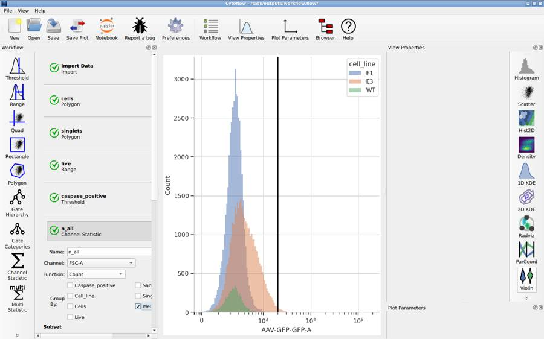
text(await tools.exec_command({cmd:"cu click 1393 792 && cu click 1393 792 && cu click 1393 792 && cu screenshot /tmp/screen.png","max_output_tokens":1000}));image((await tools.view_image({path:"/tmp/screen.png"})).image_url);
Script completed Wall time 0.4 seconds Output:
{"chunk_id":"274df4","wall_time_seconds":0.234362999,"exit_code":0,"original_token_count":4,"output":"/tmp/screen.png\n"}text(await tools.exec_command({cmd:"cu click 1353 792 && cu click 1353 792 && cu click 1353 792 && cu click 1353 792 && cu click 1353 792 && cu screenshot /tmp/screen.png","max_output_tokens":1000}));image((await tools.view_image({path:"/tmp/screen.png"})).image_url);
Script completed Wall time 0.6 seconds Output:
{"chunk_id":"a1a794","wall_time_seconds":0.442879263,"exit_code":0,"original_token_count":4,"output":"/tmp/screen.png\n"}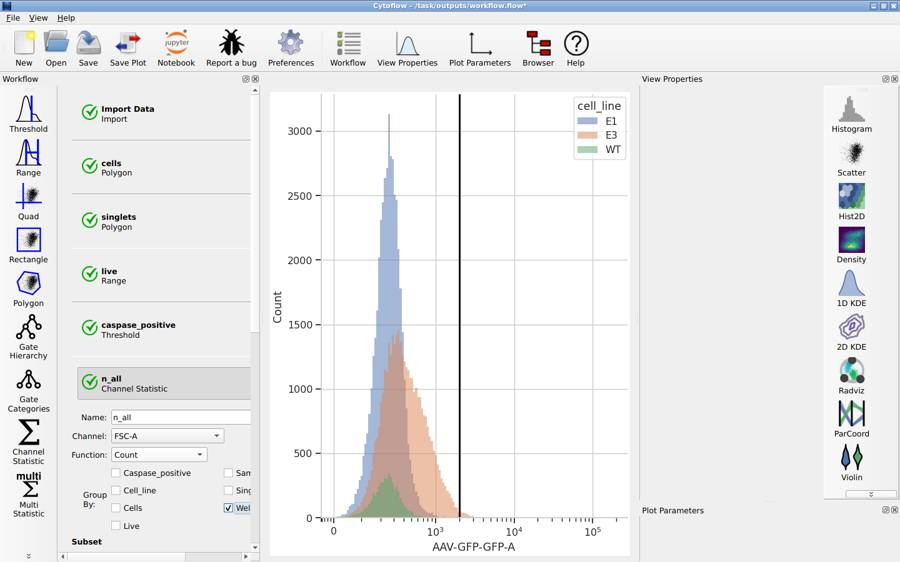
text(await tools.exec_command({cmd:"cu click 1430 816 && cu screenshot /tmp/screen.png","max_output_tokens":1000}));image((await tools.view_image({path:"/tmp/screen.png"})).image_url);
Script completed Wall time 0.2 seconds Output:
{"chunk_id":"b73c1f","wall_time_seconds":0.021687035,"exit_code":0,"original_token_count":4,"output":"/tmp/screen.png\n"}text(await tools.exec_command({cmd:"cu move 1394 891","max_output_tokens":1000}));await new Promise(r=>setTimeout(r,1800));text(await tools.exec_command({cmd:"cu screenshot /tmp/screen.png","max_output_tokens":1000}));image((await tools.view_image({path:"/tmp/screen.png"})).image_url);
Script completed Wall time 2.0 seconds Output:
{"chunk_id":"64cb5f","wall_time_seconds":0.000005046,"exit_code":0,"original_token_count":0,"output":""}{"chunk_id":"a16024","wall_time_seconds":0.000004711,"exit_code":0,"original_token_count":4,"output":"/tmp/screen.png\n"}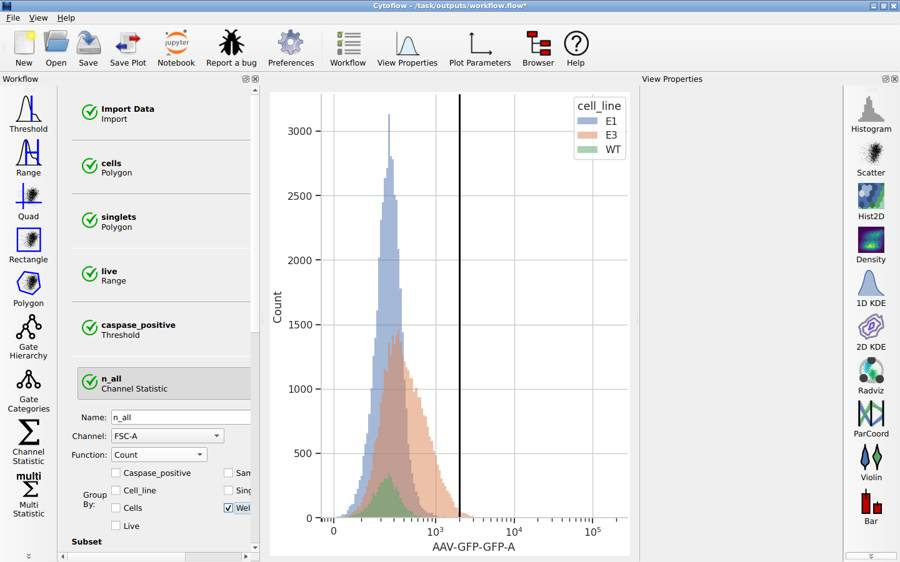
text(await tools.exec_command({cmd:"cu click 1394 890","max_output_tokens":1000}));await new Promise(r=>setTimeout(r,500));text(await tools.exec_command({cmd:"cu screenshot /tmp/screen.png","max_output_tokens":1000}));image((await tools.view_image({path:"/tmp/screen.png"})).image_url);
Script completed Wall time 0.8 seconds Output:
{"chunk_id":"69be3c","wall_time_seconds":0.000003968,"exit_code":0,"original_token_count":0,"output":""}{"chunk_id":"8d287d","wall_time_seconds":0.000005609,"exit_code":0,"original_token_count":4,"output":"/tmp/screen.png\n"}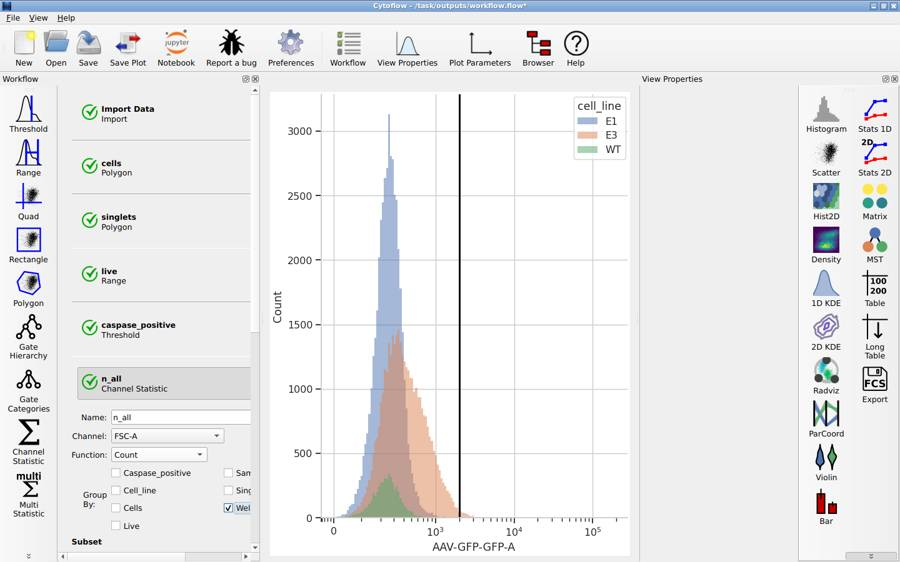
text(await tools.exec_command({cmd:"cu click 1403 452","max_output_tokens":1000}));await new Promise(r=>setTimeout(r,600));text(await tools.exec_command({cmd:"cu screenshot /tmp/screen.png","max_output_tokens":1000}));image((await tools.view_image({path:"/tmp/screen.png"})).image_url);
Script completed Wall time 0.9 seconds Output:
{"chunk_id":"c13d39","wall_time_seconds":0.000004615,"exit_code":0,"original_token_count":0,"output":""}{"chunk_id":"da7820","wall_time_seconds":0.000004729,"exit_code":0,"original_token_count":4,"output":"/tmp/screen.png\n"}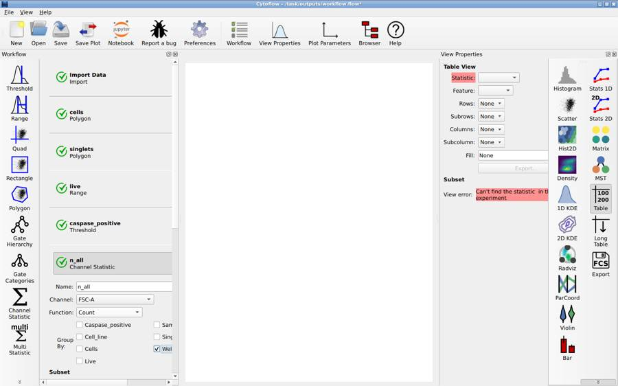
text(await tools.exec_command({cmd:"cu click 1196 181 && cu key Home && cu key Return && cu click 1183 211 && cu key Home && cu key Return && cu click 1163 240 && cu key End && cu key Return","max_output_tokens":1000}));await new Promise(r=>setTimeout(r,700));text(await tools.exec_command({cmd:"cu screenshot /tmp/screen.png","max_output_tokens":1000}));image((await tools.view_image({path:"/tmp/screen.png"})).image_url);
Script completed Wall time 1.2 seconds Output:
{"chunk_id":"4b5237","wall_time_seconds":0.262249639,"exit_code":0,"original_token_count":0,"output":""}{"chunk_id":"925dac","wall_time_seconds":0.000004888,"exit_code":0,"original_token_count":4,"output":"/tmp/screen.png\n"}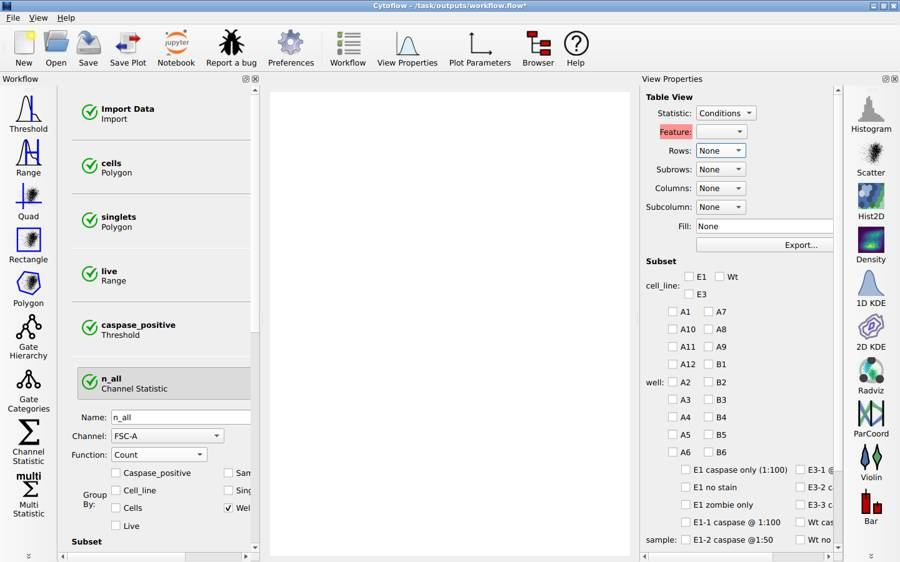
text(await tools.exec_command({cmd:"cu click 1198 181 && cu key End && cu key Return","max_output_tokens":1000}));await new Promise(r=>setTimeout(r,300));text(await tools.exec_command({cmd:"cu click 1182 212","max_output_tokens":1000}));text(await tools.exec_command({cmd:"cu screenshot /tmp/screen.png","max_output_tokens":1000}));image((await tools.view_image({path:"/tmp/screen.png"})).image_url);
Script completed Wall time 0.7 seconds Output:
{"chunk_id":"1d4fc4","wall_time_seconds":0.000005042,"exit_code":0,"original_token_count":0,"output":""}{"chunk_id":"409a6f","wall_time_seconds":0.000005069,"exit_code":0,"original_token_count":0,"output":""}{"chunk_id":"78a566","wall_time_seconds":0.000005561,"exit_code":0,"original_token_count":4,"output":"/tmp/screen.png\n"}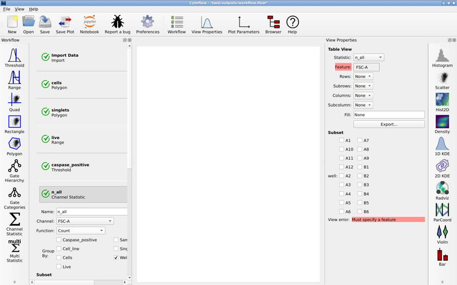
text(await tools.exec_command({cmd:"cu click 1142 210 && cu click 1165 240 && cu key End && cu key Return","max_output_tokens":1000}));await new Promise(r=>setTimeout(r,500));text(await tools.exec_command({cmd:"cu screenshot /tmp/screen.png","max_output_tokens":1000}));image((await tools.view_image({path:"/tmp/screen.png"})).image_url);
Script completed Wall time 0.9 seconds Output:
{"chunk_id":"4ad3bf","wall_time_seconds":0.09452138,"exit_code":0,"original_token_count":0,"output":""}{"chunk_id":"8e5d82","wall_time_seconds":0.000005224,"exit_code":0,"original_token_count":4,"output":"/tmp/screen.png\n"}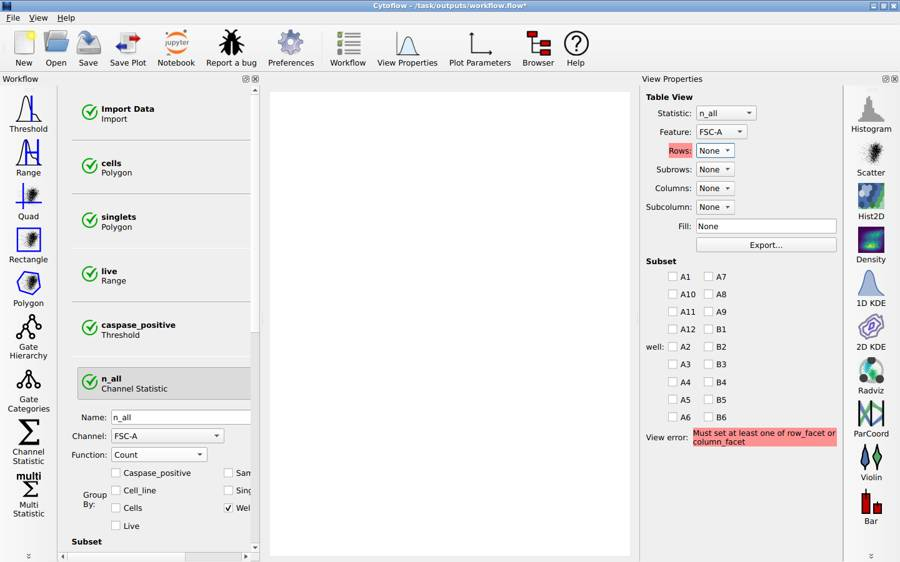
text(await tools.exec_command({cmd:"cu click 1165 240 && cu key w && cu key Return","max_output_tokens":1000}));await new Promise(r=>setTimeout(r,500));text(await tools.exec_command({cmd:"cu screenshot /tmp/screen.png","max_output_tokens":1000}));image((await tools.view_image({path:"/tmp/screen.png"})).image_url);
Script completed Wall time 0.8 seconds Output:
{"chunk_id":"315883","wall_time_seconds":0.000005118,"exit_code":0,"original_token_count":0,"output":""}{"chunk_id":"67dc0e","wall_time_seconds":0.00000566,"exit_code":0,"original_token_count":4,"output":"/tmp/screen.png\n"}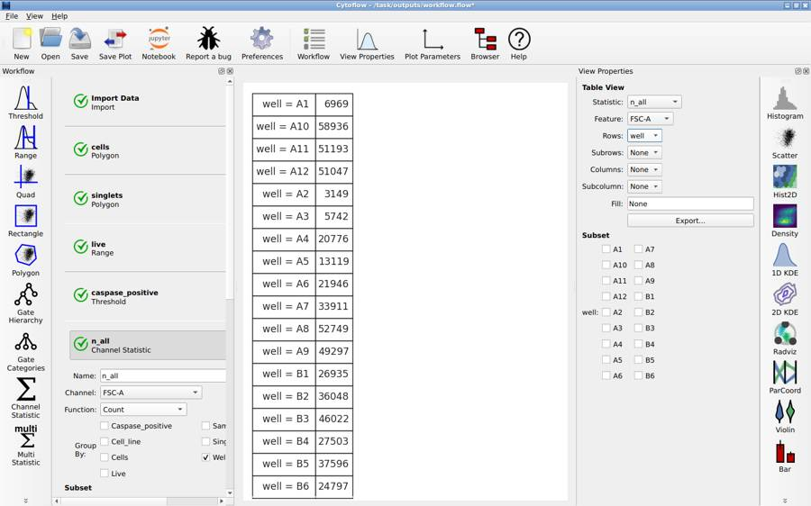
text(await tools.exec_command({cmd:"cu click 1220 392","max_output_tokens":1000}));await new Promise(r=>setTimeout(r,250));text(await tools.exec_command({cmd:"cu screenshot /tmp/screen.png","max_output_tokens":1000}));image((await tools.view_image({path:"/tmp/screen.png"})).image_url);
Script completed Wall time 0.5 seconds Output:
{"chunk_id":"0639e3","wall_time_seconds":0.000004991,"exit_code":0,"original_token_count":0,"output":""}{"chunk_id":"e06164","wall_time_seconds":0.000004403,"exit_code":0,"original_token_count":4,"output":"/tmp/screen.png\n"}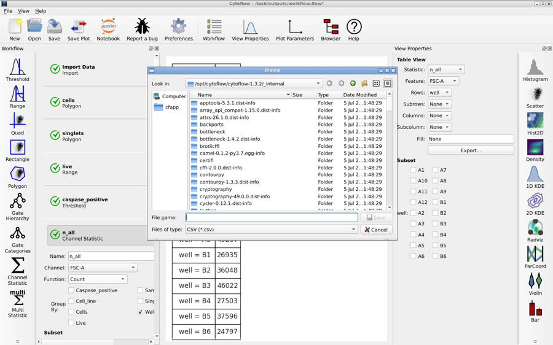
text(await tools.exec_command({cmd:"cu paste /task/outputs/export_all_events.csv && cu click 978 567","max_output_tokens":1000}));await new Promise(r=>setTimeout(r,250));text(await tools.exec_command({cmd:"cu scroll 299 809 down 6 && cu screenshot /tmp/screen.png","max_output_tokens":1000}));image((await tools.view_image({path:"/tmp/screen.png"})).image_url);
Script completed Wall time 2.4 seconds Output:
{"chunk_id":"b9ce16","wall_time_seconds":1.28654308,"exit_code":0,"original_token_count":0,"output":""}{"chunk_id":"f10f2f","wall_time_seconds":0.526570605,"exit_code":0,"original_token_count":4,"output":"/tmp/screen.png\n"}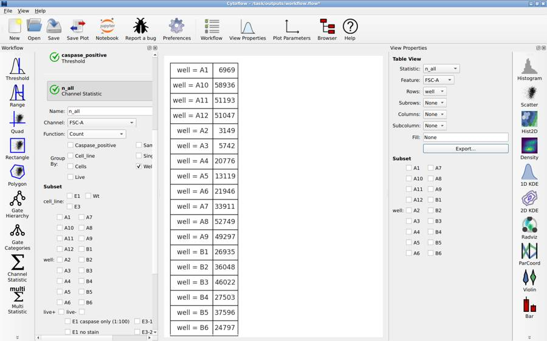
text(await tools.exec_command({cmd:"cu click 45 695","max_output_tokens":1000}));await new Promise(r=>setTimeout(r,350));text(await tools.exec_command({cmd:"cu scroll 294 799 down 15 && cu screenshot /tmp/screen.png","max_output_tokens":1000}));image((await tools.view_image({path:"/tmp/screen.png"})).image_url);
Script completed Wall time 2.1 seconds Output:
{"chunk_id":"16c067","wall_time_seconds":0.000004611,"exit_code":0,"original_token_count":0,"output":""}{"chunk_id":"add8fb","wall_time_seconds":1.425397646,"exit_code":0,"original_token_count":4,"output":"/tmp/screen.png\n"}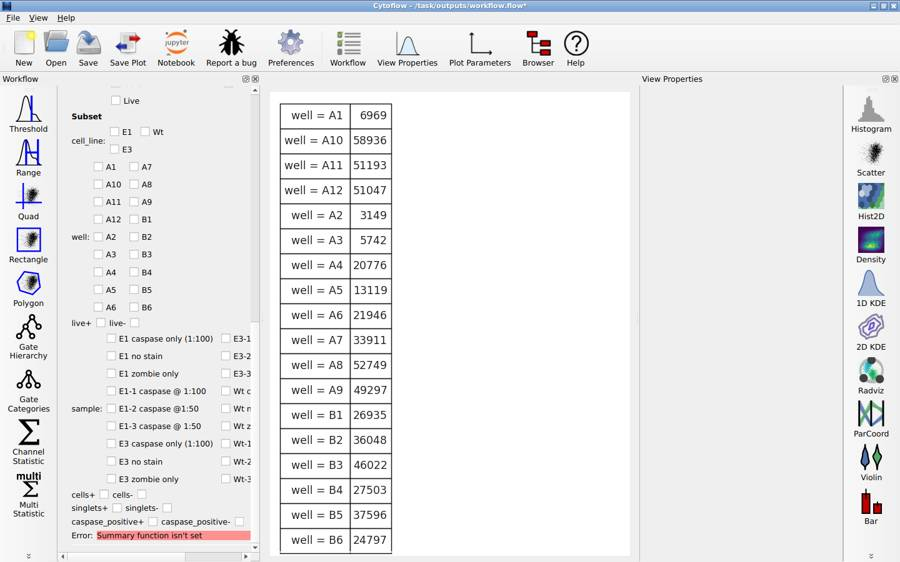
text(await tools.exec_command({cmd:"cu scroll 296 295 up 9 && cu screenshot /tmp/screen.png","max_output_tokens":1000}));image((await tools.view_image({path:"/tmp/screen.png"})).image_url);
Script completed Wall time 1.0 seconds Output:
{"chunk_id":"628abd","wall_time_seconds":0.827246812,"exit_code":0,"original_token_count":4,"output":"/tmp/screen.png\n"}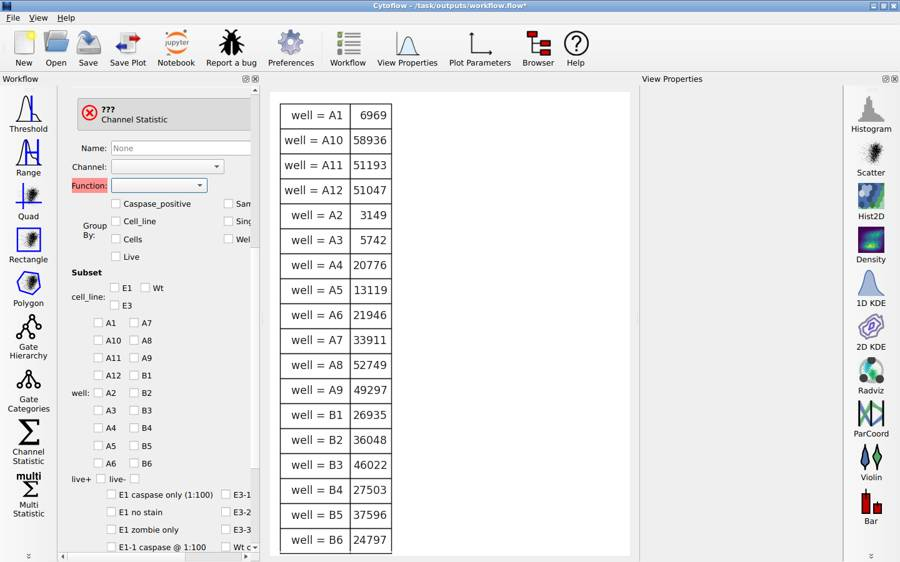
text(await tools.exec_command({cmd:"cu click 270 237 && cu type n_joint && cu click 346 266 && cu key f && cu key Return && cu click 319 297 && cu key Home && cu key Return && cu click 185 326 && cu click 366 355 && cu click 185 383 && cu click 366 383 && cu click 185 411 && cu click 1394 890","max_output_tokens":1000}));await new Promise(r=>setTimeout(r,500));text(await tools.exec_command({cmd:"cu screenshot /tmp/screen.png","max_output_tokens":1000}));image((await tools.view_image({path:"/tmp/screen.png"})).image_url);
Script completed Wall time 1.8 seconds Output:
{"chunk_id":"6f81b2","wall_time_seconds":1.046448332,"exit_code":0,"original_token_count":0,"output":""}{"chunk_id":"c91eee","wall_time_seconds":0.000004244,"exit_code":0,"original_token_count":4,"output":"/tmp/screen.png\n"}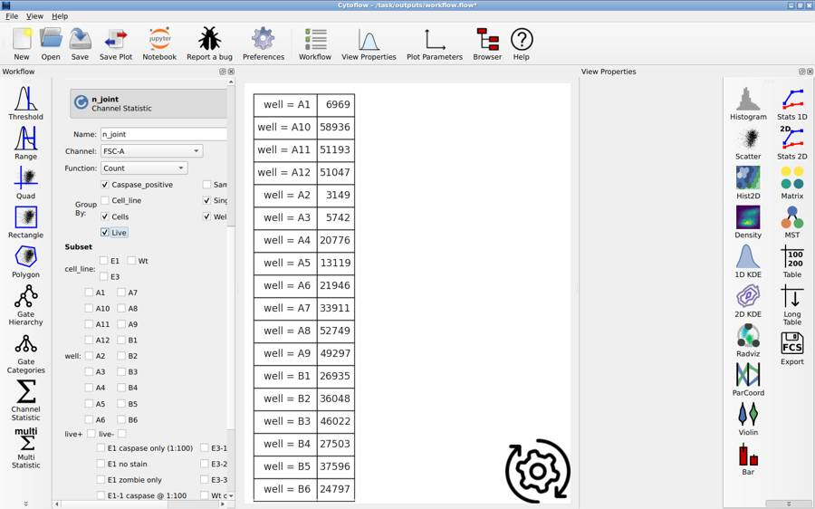
text(await tools.exec_command({cmd:"cu click 1400 525","max_output_tokens":1000}));await new Promise(r=>setTimeout(r,400));text(await tools.exec_command({cmd:"cu screenshot /tmp/screen.png","max_output_tokens":1000}));image((await tools.view_image({path:"/tmp/screen.png"})).image_url);
Script completed Wall time 0.7 seconds Output:
{"chunk_id":"c2f2bb","wall_time_seconds":0.000003833,"exit_code":0,"original_token_count":0,"output":""}{"chunk_id":"1e0fa0","wall_time_seconds":0.000005112,"exit_code":0,"original_token_count":4,"output":"/tmp/screen.png\n"}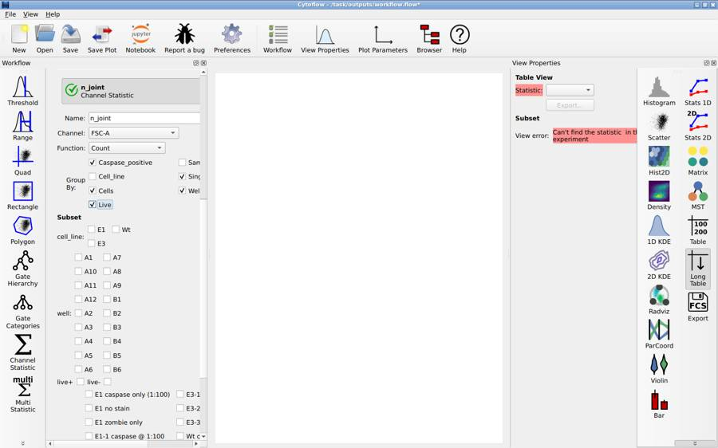
text(await tools.exec_command({cmd:"cu click 1180 181 && cu key End && cu key Return","max_output_tokens":1000}));await new Promise(r=>setTimeout(r,500));text(await tools.exec_command({cmd:"cu screenshot /tmp/screen.png","max_output_tokens":1000}));image((await tools.view_image({path:"/tmp/screen.png"})).image_url);
Script completed Wall time 0.8 seconds Output:
{"chunk_id":"43339d","wall_time_seconds":0.00000417,"exit_code":0,"original_token_count":0,"output":""}{"chunk_id":"32f793","wall_time_seconds":0.000005408,"exit_code":0,"original_token_count":4,"output":"/tmp/screen.png\n"}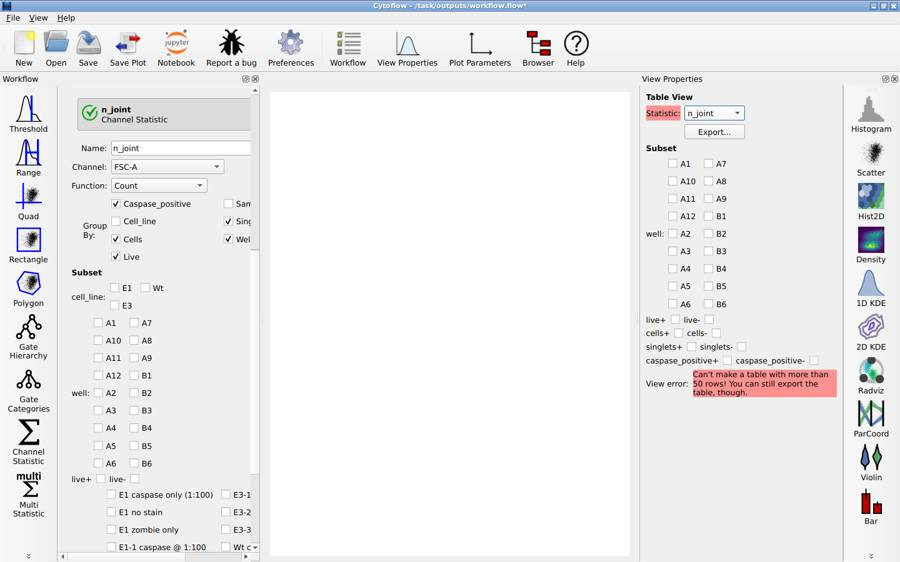
text(await tools.exec_command({cmd:"cu click 1141 210","max_output_tokens":1000}));await new Promise(r=>setTimeout(r,200));text(await tools.exec_command({cmd:"cu paste /task/outputs/export_joint_counts.csv && cu click 982 567","max_output_tokens":1000}));await new Promise(r=>setTimeout(r,200));text(await tools.exec_command({cmd:"cu key ctrl+s && cu screenshot /tmp/screen.png && cat /task/outputs/export_all_events.csv && head -15 /task/outputs/export_joint_counts.csv","max_output_tokens":3000}));image((await tools.view_image({path:"/tmp/screen.png"})).image_url);
Script completed Wall time 2.1 seconds Output:
{"chunk_id":"53ce11","wall_time_seconds":0.000003885,"exit_code":0,"original_token_count":0,"output":""}{"chunk_id":"a7f4c7","wall_time_seconds":1.287571753,"exit_code":0,"original_token_count":0,"output":""}{"chunk_id":"a8d982","wall_time_seconds":0.000005111,"exit_code":0,"original_token_count":159,"output":"/tmp/screen.png\nwell = A1,6969.0\nwell = A10,58936.0\nwell = A11,51193.0\nwell = A12,51047.0\nwell = A2,3149.0\nwell = A3,5742.0\nwell = A4,20776.0\nwell = A5,13119.0\nwell = A6,21946.0\nwell = A7,33911.0\nwell = A8,52749.0\nwell = A9,49297.0\nwell = B1,26935.0\nwell = B2,36048.0\nwell = B3,46022.0\nwell = B4,27503.0\nwell = B5,37596.0\nwell = B6,24797.0\ncaspase_positive,singlets,cells,well,live,FSC-A\n0,0,0,A1,1,577.0\n0,0,0,A10,0,396.0\n0,0,0,A10,1,1360.0\n0,0,0,A11,0,380.0\n0,0,0,A11,1,1458.0\n0,0,0,A12,0,565.0\n0,0,0,A12,1,1630.0\n0,0,0,A2,1,580.0\n0,0,0,A3,0,29.0\n0,0,0,A3,1,516.0\n0,0,0,A4,0,100.0\n0,0,0,A4,1,854.0\n0,0,0,A5,0,31.0\n0,0,0,A5,1,456.0\n"}text(await tools.exec_command({cmd:"python - <<'PY'\nimport pandas as pd\nj=pd.read_csv('/task/outputs/export_joint_counts.csv')\nl=pd.read_csv('/task/inputs/plate_layout.csv')\nrows=[]\nfor _,r in l.iterrows():\n d=j[j.well==r.well]\n defs=[('all_events','other','none',d),('cells','cells','all_events',d[d.cells==1]),('singlets','singlets','cells',d[(d.cells==1)&(d.singlets==1)]),('live','live','singlets',d[(d.cells==1)&(d.singlets==1)&(d.live==1)]),('caspase_positive','marker_positive','live',d[(d.cells==1)&(d.singlets==1)&(d.live==1)&(d.caspase_positive==1)])]\n counts={p:int(s['FSC-A'].sum()) for p,role,parent,s in defs}\n for p,role,parent,s in defs:\n n=counts[p]; pc=100*n/counts[parent] if parent in counts and counts[parent] else None\n rows.append([r.file,r.well,p,role,parent,n,pc])\no=pd.DataFrame(rows,columns=['file','well','population','role','parent','count','pct_of_parent'])\no.to_csv('/task/outputs/counts.csv',index=False)\np=o.pivot(index='well',columns='population',values='count').reindex(l.well)\np['live_pct']=100*p.live/p.singlets;p['caspase_pct']=100*p.caspase_positive/p.live\nprint(p.round(3).to_string())\nprint('total',p.all_events.sum())\nPY","max_output_tokens":3000}));
text(await tools.exec_command({cmd:"cu click 1395 246","max_output_tokens":1000}));await new Promise(r=>setTimeout(r,300));text(await tools.exec_command({cmd:"cu screenshot /tmp/screen.png","max_output_tokens":1000}));image((await tools.view_image({path:"/tmp/screen.png"})).image_url);
Script completed Wall time 0.6 seconds Output:
{"chunk_id":"b9f455","wall_time_seconds":0.000004642,"exit_code":127,"original_token_count":12,"output":"/bin/bash: line 1: python: command not found\n"}{"chunk_id":"0c9930","wall_time_seconds":0.000005214,"exit_code":0,"original_token_count":0,"output":""}{"chunk_id":"d120e3","wall_time_seconds":0.00000543,"exit_code":0,"original_token_count":4,"output":"/tmp/screen.png\n"}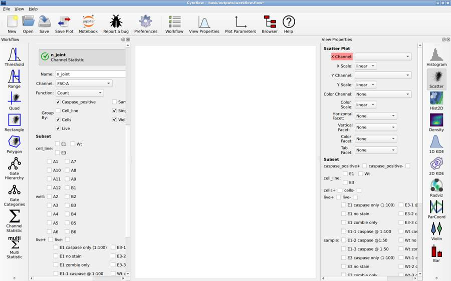
text(await tools.exec_command({cmd:"python3 - <<'PY'\nimport pandas as pd\nj=pd.read_csv('/task/outputs/export_joint_counts.csv')\nl=pd.read_csv('/task/inputs/plate_layout.csv')\nrows=[]\nfor _,r in l.iterrows():\n d=j[j.well==r.well]\n defs=[('all_events','other','none',d),('cells','cells','all_events',d[d.cells==1]),('singlets','singlets','cells',d[(d.cells==1)&(d.singlets==1)]),('live','live','singlets',d[(d.cells==1)&(d.singlets==1)&(d.live==1)]),('caspase_positive','marker_positive','live',d[(d.cells==1)&(d.singlets==1)&(d.live==1)&(d.caspase_positive==1)])]\n counts={p:int(s['FSC-A'].sum()) for p,role,parent,s in defs}\n for p,role,parent,s in defs:\n n=counts[p]; pc=100*n/counts[parent] if parent in counts and counts[parent] else None\n rows.append([r.file,r.well,p,role,parent,n,pc])\no=pd.DataFrame(rows,columns=['file','well','population','role','parent','count','pct_of_parent'])\no.to_csv('/task/outputs/counts.csv',index=False)\np=o.pivot(index='well',columns='population',values='count').reindex(l.well)\np['live_pct']=100*p.live/p.singlets;p['caspase_pct']=100*p.caspase_positive/p.live\nprint(p.round(3).to_string())\nprint('total',p.all_events.sum())\nPY","max_output_tokens":3000}));
text(await tools.exec_command({cmd:"cu click 1301 182 && cu key t && cu key Return && cu click 1300 241 && cu key f && cu key Return && cu click 1255 481 && cu key w && cu key Return","max_output_tokens":1000}));await new Promise(r=>setTimeout(r,600));text(await tools.exec_command({cmd:"cu screenshot /tmp/screen.png","max_output_tokens":1000}));image((await tools.view_image({path:"/tmp/screen.png"})).image_url);
Script completed Wall time 1.8 seconds Output:
{"chunk_id":"c82ef0","wall_time_seconds":0.438365125,"exit_code":0,"original_token_count":444,"output":"population all_events caspase_positive cells live singlets live_pct caspase_pct\nwell \nA1 6969 3 6381 6223 6223 100.000 0.048\nA2 3149 21 2550 2498 2498 100.000 0.841\nA3 5742 0 5179 4974 5054 98.417 0.000\nA4 20776 82 19736 18723 19026 98.407 0.438\nA5 13119 70 12598 12039 12181 98.834 0.581\nA6 21946 124 21074 19891 20374 97.629 0.623\nA7 33911 2 32604 31752 31752 100.000 0.006\nA8 52749 79 51162 49450 49450 100.000 0.160\nA9 49297 4 47570 44880 46128 97.294 0.009\nA10 58936 89 57037 53497 55002 97.264 0.166\nA11 51193 92 49227 46345 47601 97.361 0.199\nA12 51047 127 48699 45576 47140 96.682 0.279\nB1 26935 156 23182 22269 22269 100.000 0.701\nB2 36048 642 31457 30260 30260 100.000 2.122\nB3 46022 286 40244 36994 38511 96.061 0.773\nB4 27503 387 23989 21096 22972 91.834 1.834\nB5 37596 560 33582 31101 32167 96.686 1.801\nB6 24797 309 22005 19785 21148 93.555 1.562\ntotal 567735\n"}{"chunk_id":"a4611d","wall_time_seconds":0.261457876,"exit_code":0,"original_token_count":0,"output":""}{"chunk_id":"66f767","wall_time_seconds":0.000005595,"exit_code":0,"original_token_count":4,"output":"/tmp/screen.png\n"}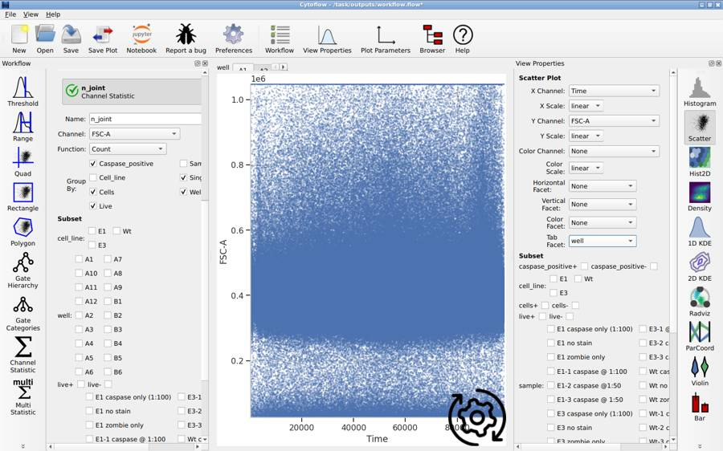
text(await tools.exec_command({cmd:"cu screenshot /tmp/screen.png","max_output_tokens":1000}));image((await tools.view_image({path:"/tmp/screen.png"})).image_url);
Script completed Wall time 0.1 seconds Output:
{"chunk_id":"e3d4ec","wall_time_seconds":0.000005399,"exit_code":0,"original_token_count":4,"output":"/tmp/screen.png\n"}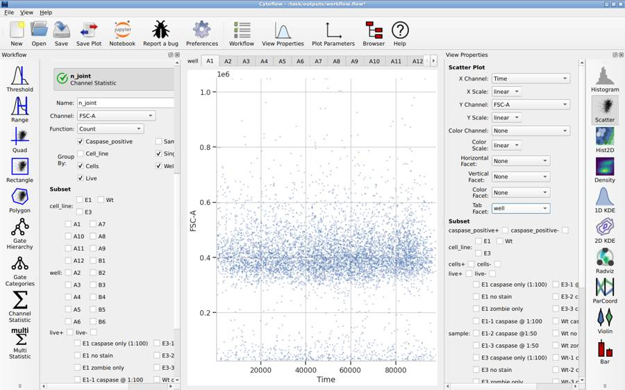
text(await tools.exec_command({cmd:"mkdir -p /task/outputs/qc","max_output_tokens":1000}));
for (const [w,x] of [["A1",483],["A2",525],["A3",568],["A4",609],["A5",652],["A6",692]]) {
await tools.exec_command({cmd:`cu click ${x} 140`,max_output_tokens:1000});
await new Promise(r=>setTimeout(r,900));
await tools.exec_command({cmd:`cu screenshot /task/outputs/qc/time_${w}.png`,max_output_tokens:1000});
}
text(await tools.exec_command({cmd:"python3 - <<'PY'\nfrom PIL import Image,ImageOps,ImageDraw\nwells=['A1','A2','A3','A4','A5','A6']\nout=Image.new('RGB',(1200,1000),'white')\nfor i,w in enumerate(wells):\n im=Image.open('/task/outputs/qc/time_'+w+'.png').crop((431,150,1009,890)).resize((400,480))\n out.paste(im,((i%3)*400,(i//3)*500+20)); ImageDraw.Draw(out).text(((i%3)*400+10,(i//3)*500+5),w,fill='black')\nout.save('/tmp/time_montage.png')\nPY","max_output_tokens":1000}));image((await tools.view_image({path:"/tmp/time_montage.png"})).image_url);
Script completed Wall time 7.3 seconds Output:
{"chunk_id":"a5427f","wall_time_seconds":0.000003965,"exit_code":0,"original_token_count":0,"output":""}{"chunk_id":"505b64","wall_time_seconds":0.164675393,"exit_code":0,"original_token_count":0,"output":""}for (const [w,x] of [["A7",734],["A8",775],["A9",818],["A10",861],["A11",915],["A12",959]]) {
await tools.exec_command({cmd:`cu click ${x} 140`,max_output_tokens:1000});
await new Promise(r=>setTimeout(r,900));
await tools.exec_command({cmd:`cu screenshot /task/outputs/qc/time_${w}.png`,max_output_tokens:1000});
}
text(await tools.exec_command({cmd:"python3 - <<'PY'\nfrom PIL import Image,ImageDraw\nwells=['A7','A8','A9','A10','A11','A12']\nout=Image.new('RGB',(1200,1000),'white')\nfor i,w in enumerate(wells):\n im=Image.open('/task/outputs/qc/time_'+w+'.png').crop((431,150,1009,890)).resize((400,480))\n out.paste(im,((i%3)*400,(i//3)*500+20)); ImageDraw.Draw(out).text(((i%3)*400+10,(i//3)*500+5),w,fill='black')\nout.save('/tmp/time_montage.png')\nPY","max_output_tokens":1000}));image((await tools.view_image({path:"/tmp/time_montage.png"})).image_url);
text(await tools.exec_command({cmd:"cu click 999 139 && cu click 999 139 && cu click 999 139 && cu click 999 139 && cu click 999 139 && cu click 999 139 && cu screenshot /tmp/screen.png","max_output_tokens":1000}));image((await tools.view_image({path:"/tmp/screen.png"})).image_url);
Script completed Wall time 8.1 seconds Output:
{"chunk_id":"0e05cf","wall_time_seconds":0.185780524,"exit_code":0,"original_token_count":0,"output":""}{"chunk_id":"7d51d3","wall_time_seconds":0.57427662,"exit_code":0,"original_token_count":4,"output":"/tmp/screen.png\n"}for (const [w,x] of [["B1",746],["B2",788],["B3",830],["B4",871],["B5",913],["B6",955]]) {
await tools.exec_command({cmd:`cu click ${x} 140`,max_output_tokens:1000});
await new Promise(r=>setTimeout(r,900));
await tools.exec_command({cmd:`cu screenshot /task/outputs/qc/time_${w}.png`,max_output_tokens:1000});
}
text(await tools.exec_command({cmd:"python3 - <<'PY'\nfrom PIL import Image,ImageDraw\nwells=['B1','B2','B3','B4','B5','B6']\nout=Image.new('RGB',(1200,1000),'white')\nfor i,w in enumerate(wells):\n im=Image.open('/task/outputs/qc/time_'+w+'.png').crop((431,150,1009,890)).resize((400,480))\n out.paste(im,((i%3)*400,(i//3)*500+20)); ImageDraw.Draw(out).text(((i%3)*400+10,(i//3)*500+5),w,fill='black')\nout.save('/tmp/time_montage.png')\nPY","max_output_tokens":1000}));image((await tools.view_image({path:"/tmp/time_montage.png"})).image_url);
Script completed Wall time 7.5 seconds Output:
{"chunk_id":"a93e15","wall_time_seconds":0.222314016,"exit_code":0,"original_token_count":0,"output":""}text(await tools.exec_command({cmd:"cu click 1302 182 && cu key a && cu key Return && cu click 1190 211 && cu key End && cu key Return && cu click 1301 241 && cu key l && cu key Return && cu click 1190 271 && cu key End && cu key Return && cu click 1086 609 && cu scroll 1254 770 down 6","max_output_tokens":1000}));await new Promise(r=>setTimeout(r,900));text(await tools.exec_command({cmd:"cu screenshot /tmp/screen.png","max_output_tokens":1000}));image((await tools.view_image({path:"/tmp/screen.png"})).image_url);
Script completed Wall time 2.3 seconds Output:
{"chunk_id":"5e3343","wall_time_seconds":1.111111809,"exit_code":0,"original_token_count":0,"output":""}{"chunk_id":"659402","wall_time_seconds":0.000004864,"exit_code":0,"original_token_count":4,"output":"/tmp/screen.png\n"}text(await tools.exec_command({cmd:"cu click 1105 608 && cu click 746 140","max_output_tokens":1000}));await new Promise(r=>setTimeout(r,700));text(await tools.exec_command({cmd:"cu screenshot /tmp/screen.png","max_output_tokens":1000}));image((await tools.view_image({path:"/tmp/screen.png"})).image_url);
Script completed Wall time 1.1 seconds Output:
{"chunk_id":"9cad75","wall_time_seconds":0.061500984,"exit_code":0,"original_token_count":0,"output":""}{"chunk_id":"fd2450","wall_time_seconds":0.000004957,"exit_code":0,"original_token_count":4,"output":"/tmp/screen.png\n"}await new Promise(r=>setTimeout(r,1200));text(await tools.exec_command({cmd:"cu screenshot /tmp/screen.png","max_output_tokens":1000}));image((await tools.view_image({path:"/tmp/screen.png"})).image_url);
Script completed Wall time 1.3 seconds Output:
{"chunk_id":"1d9a8c","wall_time_seconds":0.000004671,"exit_code":0,"original_token_count":4,"output":"/tmp/screen.png\n"}for (const [w,x] of [["B1",746],["B2",788],["B3",830],["B4",871],["B5",913],["B6",955]]) {
await tools.exec_command({cmd:`cu click ${x} 140`,max_output_tokens:1000});
await new Promise(r=>setTimeout(r,1500));
await tools.exec_command({cmd:`cu screenshot /task/outputs/qc/fluor_${w}.png`,max_output_tokens:1000});
}
text(await tools.exec_command({cmd:"python3 - <<'PY'\nfrom PIL import Image,ImageDraw\nwells=['B1','B2','B3','B4','B5','B6']\nout=Image.new('RGB',(1200,1000),'white')\nfor i,w in enumerate(wells):\n im=Image.open('/task/outputs/qc/fluor_'+w+'.png').crop((431,150,1009,890)).resize((400,480))\n out.paste(im,((i%3)*400,(i//3)*500+20)); ImageDraw.Draw(out).text(((i%3)*400+10,(i//3)*500+5),w,fill='black')\nout.save('/tmp/fluor_montage.png')\nPY","max_output_tokens":1000}));image((await tools.view_image({path:"/tmp/fluor_montage.png"})).image_url);
text(await tools.exec_command({cmd:"cu click 984 139 && cu click 984 139 && cu click 984 139 && cu click 984 139 && cu click 984 139 && cu click 984 139 && cu screenshot /tmp/screen.png","max_output_tokens":1000}));image((await tools.view_image({path:"/tmp/screen.png"})).image_url);
Script completed Wall time 11.6 seconds Output:
{"chunk_id":"2c7bd5","wall_time_seconds":0.116028022,"exit_code":0,"original_token_count":0,"output":""}{"chunk_id":"3d6c1b","wall_time_seconds":0.559981094,"exit_code":0,"original_token_count":4,"output":"/tmp/screen.png\n"}text(await tools.exec_command({cmd:"cu click 984 139 && cu screenshot /tmp/screen.png","max_output_tokens":1000}));image((await tools.view_image({path:"/tmp/screen.png"})).image_url);
Script completed Wall time 0.2 seconds Output:
{"chunk_id":"56578b","wall_time_seconds":0.031866294,"exit_code":0,"original_token_count":4,"output":"/tmp/screen.png\n"}for (const [w,x] of [["A1",483],["A2",525],["A3",568],["A4",609],["A5",652],["A6",692],["A7",734],["A8",775],["A9",818],["A10",861],["A11",915],["A12",959]]) {
await tools.exec_command({cmd:`cu click ${x} 140`,max_output_tokens:1000});
await new Promise(r=>setTimeout(r,1500));
await tools.exec_command({cmd:`cu screenshot /task/outputs/qc/fluor_${w}.png`,max_output_tokens:1000});
}
text(await tools.exec_command({cmd:"python3 - <<'PY'\nfrom PIL import Image,ImageDraw\nfor k,wells in enumerate([['A1','A2','A3','A4','A5','A6'],['A7','A8','A9','A10','A11','A12']]):\n out=Image.new('RGB',(1200,1000),'white')\n for i,w in enumerate(wells):\n im=Image.open('/task/outputs/qc/fluor_'+w+'.png').crop((431,150,1009,890)).resize((400,480))\n out.paste(im,((i%3)*400,(i//3)*500+20)); ImageDraw.Draw(out).text(((i%3)*400+10,(i//3)*500+5),w,fill='black')\n out.save('/tmp/fluor_montage_'+str(k)+'.png')\nPY","max_output_tokens":1000}));image((await tools.view_image({path:"/tmp/fluor_montage_0.png"})).image_url);image((await tools.view_image({path:"/tmp/fluor_montage_1.png"})).image_url);
Script completed Wall time 21.5 seconds Output:
{"chunk_id":"24254f","wall_time_seconds":0.302872173,"exit_code":0,"original_token_count":0,"output":""}text(await tools.clock__curr_time({}));
text(await tools.exec_command({cmd:"cu click 46 178","max_output_tokens":1000}));await new Promise(r=>setTimeout(r,500));text(await tools.exec_command({cmd:"cu scroll 280 809 down 15 && cu screenshot /tmp/screen.png","max_output_tokens":1000}));image((await tools.view_image({path:"/tmp/screen.png"})).image_url);
Script completed Wall time 2.3 seconds Output:
{"current_time":"2026-11-06 00:43:22 UTC"}{"chunk_id":"354185","wall_time_seconds":0.000004571,"exit_code":0,"original_token_count":0,"output":""}{"chunk_id":"7c9637","wall_time_seconds":1.429662853,"exit_code":0,"original_token_count":4,"output":"/tmp/screen.png\n"}text(await tools.exec_command({cmd:"cu click 276 771 && cu type fsc_ceiling && cu click 357 800 && cu key f && cu key Return && cu click 278 832 && cu type 1040000 && cu key Tab","max_output_tokens":1000}));await new Promise(r=>setTimeout(r,1200));text(await tools.exec_command({cmd:"cu screenshot /tmp/screen.png","max_output_tokens":1000}));image((await tools.view_image({path:"/tmp/screen.png"})).image_url);
Script completed Wall time 2.2 seconds Output:
{"chunk_id":"6d9280","wall_time_seconds":0.679940617,"exit_code":0,"original_token_count":0,"output":""}{"chunk_id":"d726a0","wall_time_seconds":0.000006106,"exit_code":0,"original_token_count":4,"output":"/tmp/screen.png\n"}text(await tools.exec_command({cmd:"cu click 283 845 && cu key ctrl+a && cu type 1040000 && cu key Tab","max_output_tokens":1000}));await new Promise(r=>setTimeout(r,700));text(await tools.exec_command({cmd:"cu screenshot /tmp/screen.png","max_output_tokens":1000}));image((await tools.view_image({path:"/tmp/screen.png"})).image_url);
Script completed Wall time 1.2 seconds Output:
{"chunk_id":"a82636","wall_time_seconds":0.180376871,"exit_code":0,"original_token_count":0,"output":""}{"chunk_id":"33d6fc","wall_time_seconds":0.000006281,"exit_code":0,"original_token_count":4,"output":"/tmp/screen.png\n"}text(await tools.exec_command({cmd:"cu click 46 178","max_output_tokens":1000}));await new Promise(r=>setTimeout(r,300));text(await tools.exec_command({cmd:"cu scroll 310 750 down 7 && cu screenshot /tmp/screen.png","max_output_tokens":1000}));image((await tools.view_image({path:"/tmp/screen.png"})).image_url);
Script completed Wall time 1.2 seconds Output:
{"chunk_id":"d8fd31","wall_time_seconds":0.000004962,"exit_code":0,"original_token_count":0,"output":""}{"chunk_id":"968727","wall_time_seconds":0.626279361,"exit_code":0,"original_token_count":4,"output":"/tmp/screen.png\n"}text(await tools.exec_command({cmd:"cu click 275 771 && cu type ssc_ceiling && cu key Tab && cu key s && cu key Tab && cu key ctrl+a && cu type 1040000 && cu key Tab","max_output_tokens":1000}));await new Promise(r=>setTimeout(r,800));text(await tools.exec_command({cmd:"cu screenshot /tmp/screen.png","max_output_tokens":1000}));image((await tools.view_image({path:"/tmp/screen.png"})).image_url);
Script completed Wall time 1.6 seconds Output:
{"chunk_id":"266c97","wall_time_seconds":0.509006273,"exit_code":0,"original_token_count":0,"output":""}{"chunk_id":"bbb541","wall_time_seconds":0.00000537,"exit_code":0,"original_token_count":4,"output":"/tmp/screen.png\n"}text(await tools.exec_command({cmd:"cu click 46 178","max_output_tokens":1000}));await new Promise(r=>setTimeout(r,250));text(await tools.exec_command({cmd:"cu scroll 300 700 down 6","max_output_tokens":1000}));text(await tools.exec_command({cmd:"cu screenshot /tmp/screen.png","max_output_tokens":1000}));image((await tools.view_image({path:"/tmp/screen.png"})).image_url);
Script completed Wall time 1.1 seconds Output:
{"chunk_id":"3d9018","wall_time_seconds":0.000012447,"exit_code":0,"original_token_count":0,"output":""}{"chunk_id":"1db964","wall_time_seconds":0.457917185,"exit_code":0,"original_token_count":0,"output":""}{"chunk_id":"846586","wall_time_seconds":0.000004469,"exit_code":0,"original_token_count":4,"output":"/tmp/screen.png\n"}text(await tools.exec_command({cmd:"cu click 277 770 && cu type zombie_ceiling && cu key Tab && cu key l && cu key Tab && cu key ctrl+a && cu type 1040000 && cu key Tab","max_output_tokens":1000}));await new Promise(r=>setTimeout(r,800));text(await tools.exec_command({cmd:"cu screenshot /tmp/screen.png","max_output_tokens":1000}));image((await tools.view_image({path:"/tmp/screen.png"})).image_url);
Script completed Wall time 1.7 seconds Output:
{"chunk_id":"1bfeb9","wall_time_seconds":0.584859646,"exit_code":0,"original_token_count":0,"output":""}{"chunk_id":"6cfe04","wall_time_seconds":0.000004697,"exit_code":0,"original_token_count":4,"output":"/tmp/screen.png\n"}text(await tools.exec_command({cmd:"python3 - <<'PY'\nimport pandas as pd\nj=pd.read_csv('/task/outputs/export_joint_counts.csv');j=j[(j.cells==1)&(j.singlets==1)]\na=j.groupby('well')['FSC-A'].sum();b=j[j.caspase_positive==1].groupby('well')['FSC-A'].sum();c=j[(j.caspase_positive==1)&(j.live==0)].groupby('well')['FSC-A'].sum()\nprint(pd.DataFrame({'total_singlet_pos_pct':100*b/a,'positive_dead_count':c}).fillna(0).round(3).to_string())\nPY","max_output_tokens":2000}));
text(await tools.exec_command({cmd:"cu click 46 694","max_output_tokens":1000}));await new Promise(r=>setTimeout(r,250));text(await tools.exec_command({cmd:"cu scroll 309 703 down 9 && cu screenshot /tmp/screen.png","max_output_tokens":1000}));image((await tools.view_image({path:"/tmp/screen.png"})).image_url);
Script completed Wall time 1.7 seconds Output:
{"chunk_id":"03ddc2","wall_time_seconds":0.143542129,"exit_code":0,"original_token_count":245,"output":" total_singlet_pos_pct positive_dead_count\nwell \nA1 0.048 0.0\nA10 0.175 7.0\nA11 0.204 5.0\nA12 0.280 5.0\nA2 0.841 0.0\nA3 0.000 0.0\nA4 0.436 1.0\nA5 0.575 0.0\nA6 0.633 5.0\nA7 0.006 0.0\nA8 0.160 0.0\nA9 0.009 0.0\nB1 0.701 0.0\nB2 2.122 0.0\nB3 0.841 38.0\nB4 2.116 99.0\nB5 1.881 45.0\nB6 1.844 81.0\n"}{"chunk_id":"e56980","wall_time_seconds":0.000003943,"exit_code":0,"original_token_count":0,"output":""}{"chunk_id":"b9ee51","wall_time_seconds":0.823243246,"exit_code":0,"original_token_count":4,"output":"/tmp/screen.png\n"}text(await tools.exec_command({cmd:"cu click 268 645 && cu type n_qc && cu key Tab && cu key f && cu key Tab && cu key Home && cu key Tab","max_output_tokens":1000}));await new Promise(r=>setTimeout(r,500));text(await tools.exec_command({cmd:"cu screenshot /tmp/screen.png","max_output_tokens":1000}));image((await tools.view_image({path:"/tmp/screen.png"})).image_url);
Script completed Wall time 0.9 seconds Output:
{"chunk_id":"a030d9","wall_time_seconds":0.139501778,"exit_code":0,"original_token_count":0,"output":""}{"chunk_id":"cfb06f","wall_time_seconds":0.000004806,"exit_code":0,"original_token_count":4,"output":"/tmp/screen.png\n"}text(await tools.exec_command({cmd:"cu click 185 743 && cu click 366 714 && cu click 366 743 && cu click 366 770 && cu click 1394 890","max_output_tokens":1000}));await new Promise(r=>setTimeout(r,500));text(await tools.exec_command({cmd:"cu screenshot /tmp/screen.png","max_output_tokens":1000}));image((await tools.view_image({path:"/tmp/screen.png"})).image_url);
Script completed Wall time 1.2 seconds Output:
{"chunk_id":"66b4b7","wall_time_seconds":0.379007327,"exit_code":0,"original_token_count":0,"output":""}{"chunk_id":"18f4d7","wall_time_seconds":0.000006557,"exit_code":0,"original_token_count":4,"output":"/tmp/screen.png\n"}text(await tools.exec_command({cmd:"cu click 1399 526","max_output_tokens":1000}));await new Promise(r=>setTimeout(r,300));text(await tools.exec_command({cmd:"cu click 1180 181 && cu key End && cu key Return","max_output_tokens":1000}));await new Promise(r=>setTimeout(r,600));text(await tools.exec_command({cmd:"cu screenshot /tmp/screen.png","max_output_tokens":1000}));image((await tools.view_image({path:"/tmp/screen.png"})).image_url);
Script completed Wall time 1.3 seconds Output:
{"chunk_id":"07cf8b","wall_time_seconds":0.000004908,"exit_code":0,"original_token_count":0,"output":""}{"chunk_id":"7fc219","wall_time_seconds":0.000004561,"exit_code":0,"original_token_count":0,"output":""}{"chunk_id":"935dae","wall_time_seconds":0.000004516,"exit_code":0,"original_token_count":4,"output":"/tmp/screen.png\n"}text(await tools.exec_command({cmd:"cu click 1141 210","max_output_tokens":1000}));await new Promise(r=>setTimeout(r,250));text(await tools.exec_command({cmd:"cu paste /task/outputs/export_qc_counts.csv && cu click 982 567","max_output_tokens":1000}));await new Promise(r=>setTimeout(r,300));text(await tools.exec_command({cmd:"cu key ctrl+s && python3 - <<'PY'\nimport pandas as pd\nq=pd.read_csv('/task/outputs/export_qc_counts.csv')\nn=q.groupby('well')['FSC-A'].sum()\no=pd.DataFrame({g:q[q[g]==1].groupby('well')['FSC-A'].sum().reindex(n.index,fill_value=0) for g in ['fsc_ceiling','ssc_ceiling','zombie_ceiling']})\nprint(o.to_string());print((o.div(n,axis=0)*100).round(3).to_string())\nPY","max_output_tokens":3000}));
Script completed
Wall time 2.5 seconds
Output:
{"chunk_id":"caeebd","wall_time_seconds":0.000004525,"exit_code":0,"original_token_count":0,"output":""}
{"chunk_id":"e4f2f1","wall_time_seconds":1.285047664,"exit_code":0,"original_token_count":0,"output":""}
{"chunk_id":"0e631f","wall_time_seconds":0.180860756,"exit_code":0,"original_token_count":470,"output":" fsc_ceiling ssc_ceiling zombie_ceiling\nwell \nA1 9.0 14.0 0.0\nA10 60.0 62.0 65.0\nA11 40.0 50.0 77.0\nA12 30.0 49.0 84.0\nA2 3.0 12.0 0.0\nA3 9.0 14.0 6.0\nA4 69.0 48.0 19.0\nA5 19.0 19.0 17.0\nA6 41.0 31.0 42.0\nA7 18.0 33.0 0.0\nA8 38.0 55.0 0.0\nA9 38.0 43.0 37.0\nB1 817.0 1001.0 0.0\nB2 1094.0 1221.0 0.0\nB3 1769.0 1880.0 148.0\nB4 964.0 1039.0 131.0\nB5 1400.0 1480.0 138.0\nB6 701.0 840.0 97.0\n fsc_ceiling ssc_ceiling zombie_ceiling\nwell \nA1 0.129 0.201 0.000\nA10 0.102 0.105 0.110\nA11 0.078 0.098 0.150\nA12 0.059 0.096 0.165\nA2 0.095 0.381 0.000\nA3 0.157 0.244 0.104\nA4 0.332 0.231 0.091\nA5 0.145 0.145 0.130\nA6 0.187 0.141 0.191\nA7 0.053 0.097 0.000\nA8 0.072 0.104 0.000\nA9 0.077 0.087 0.075\nB1 3.033 3.716 0.000\nB2 3.035 3.387 0.000\nB3 3.844 4.085 0.322\nB4 3.505 3.778 0.476\nB5 3.724 3.937 0.367\nB6 2.827 3.388 0.391\n"}text(await tools.exec_command({cmd:"cu click 46 178","max_output_tokens":1000}));await new Promise(r=>setTimeout(r,250));text(await tools.exec_command({cmd:"cu scroll 301 700 down 15 && cu screenshot /tmp/screen.png","max_output_tokens":1000}));image((await tools.view_image({path:"/tmp/screen.png"})).image_url);
Script completed Wall time 2.0 seconds Output:
{"chunk_id":"9b2877","wall_time_seconds":0.000004726,"exit_code":0,"original_token_count":0,"output":""}{"chunk_id":"01934b","wall_time_seconds":1.428177395,"exit_code":0,"original_token_count":4,"output":"/tmp/screen.png\n"}text(await tools.exec_command({cmd:"cu click 278 770 && cu type caspase_high && cu key Tab && cu key Home && cu key Tab && cu key ctrl+a && cu type 4000 && cu key Tab","max_output_tokens":1000}));await new Promise(r=>setTimeout(r,800));text(await tools.exec_command({cmd:"cu screenshot /tmp/screen.png","max_output_tokens":1000}));image((await tools.view_image({path:"/tmp/screen.png"})).image_url);
Script completed Wall time 1.5 seconds Output:
{"chunk_id":"d2d42b","wall_time_seconds":0.457666401,"exit_code":0,"original_token_count":0,"output":""}{"chunk_id":"e2c574","wall_time_seconds":0.000004357,"exit_code":0,"original_token_count":4,"output":"/tmp/screen.png\n"}text(await tools.exec_command({cmd:"cu click 46 694","max_output_tokens":1000}));await new Promise(r=>setTimeout(r,300));text(await tools.exec_command({cmd:"cu scroll 300 700 down 8 && cu screenshot /tmp/screen.png","max_output_tokens":1000}));image((await tools.view_image({path:"/tmp/screen.png"})).image_url);
Script completed Wall time 1.3 seconds Output:
{"chunk_id":"4661a8","wall_time_seconds":0.000005936,"exit_code":0,"original_token_count":0,"output":""}{"chunk_id":"520f22","wall_time_seconds":0.722590678,"exit_code":0,"original_token_count":4,"output":"/tmp/screen.png\n"}text(await tools.exec_command({cmd:"cu click 272 645 && cu type n_high && cu key Tab && cu key f && cu key Tab && cu key Home && cu key Tab","max_output_tokens":1000}));await new Promise(r=>setTimeout(r,300));text(await tools.exec_command({cmd:"cu screenshot /tmp/screen.png","max_output_tokens":1000}));image((await tools.view_image({path:"/tmp/screen.png"})).image_url);
Script completed Wall time 0.8 seconds Output:
{"chunk_id":"dba721","wall_time_seconds":0.192387579,"exit_code":0,"original_token_count":0,"output":""}{"chunk_id":"7084f8","wall_time_seconds":0.000004721,"exit_code":0,"original_token_count":4,"output":"/tmp/screen.png\n"}text(await tools.exec_command({cmd:"cu click 185 630 && cu click 366 714 && cu scroll 300 744 down 9 && cu screenshot /tmp/screen.png","max_output_tokens":1000}));image((await tools.view_image({path:"/tmp/screen.png"})).image_url);
Script completed Wall time 1.2 seconds Output:
{"chunk_id":"a67fd6","wall_time_seconds":1.032267828,"exit_code":0,"original_token_count":4,"output":"/tmp/screen.png\n"}text(await tools.exec_command({cmd:"cu click 162 565 && cu scroll 300 746 down 5 && cu screenshot /tmp/screen.png","max_output_tokens":1000}));image((await tools.view_image({path:"/tmp/screen.png"})).image_url);
Script completed Wall time 0.7 seconds Output:
{"chunk_id":"e40952","wall_time_seconds":0.528321587,"exit_code":0,"original_token_count":4,"output":"/tmp/screen.png\n"}text(await tools.exec_command({cmd:"cu click 167 770 && cu click 188 812 && cu click 1394 890","max_output_tokens":1000}));await new Promise(r=>setTimeout(r,300));text(await tools.exec_command({cmd:"cu click 1399 526","max_output_tokens":1000}));await new Promise(r=>setTimeout(r,300));text(await tools.exec_command({cmd:"cu click 1180 181 && cu key n && cu key n && cu key Return","max_output_tokens":1000}));await new Promise(r=>setTimeout(r,700));text(await tools.exec_command({cmd:"cu screenshot /tmp/screen.png","max_output_tokens":1000}));image((await tools.view_image({path:"/tmp/screen.png"})).image_url);
Script completed Wall time 2.1 seconds Output:
{"chunk_id":"026259","wall_time_seconds":0.167965283,"exit_code":0,"original_token_count":0,"output":""}{"chunk_id":"9bbe30","wall_time_seconds":0.000004492,"exit_code":0,"original_token_count":0,"output":""}{"chunk_id":"b881a6","wall_time_seconds":0.004078625,"exit_code":0,"original_token_count":0,"output":""}{"chunk_id":"b9cbad","wall_time_seconds":0.000005565,"exit_code":0,"original_token_count":4,"output":"/tmp/screen.png\n"}text(await tools.exec_command({cmd:"cu click 1180 181 && cu screenshot /tmp/screen.png","max_output_tokens":1000}));image((await tools.view_image({path:"/tmp/screen.png"})).image_url);
Script completed Wall time 0.2 seconds Output:
{"chunk_id":"559e82","wall_time_seconds":0.025685227,"exit_code":0,"original_token_count":4,"output":"/tmp/screen.png\n"}text(await tools.exec_command({cmd:"cu click 1123 206","max_output_tokens":1000}));await new Promise(r=>setTimeout(r,600));text(await tools.exec_command({cmd:"cu click 1142 210","max_output_tokens":1000}));await new Promise(r=>setTimeout(r,250));text(await tools.exec_command({cmd:"cu paste /task/outputs/export_high_counts.csv && cu click 982 567","max_output_tokens":1000}));await new Promise(r=>setTimeout(r,300));text(await tools.exec_command({cmd:"cu key ctrl+s && cu screenshot /tmp/screen.png && cat /task/outputs/export_high_counts.csv","max_output_tokens":3000}));image((await tools.view_image({path:"/tmp/screen.png"})).image_url);
Script completed Wall time 3.0 seconds Output:
{"chunk_id":"40d63c","wall_time_seconds":0.000003965,"exit_code":0,"original_token_count":0,"output":""}{"chunk_id":"bfb7db","wall_time_seconds":0.000004436,"exit_code":0,"original_token_count":0,"output":""}{"chunk_id":"b79a1e","wall_time_seconds":1.288446733,"exit_code":0,"original_token_count":0,"output":""}{"chunk_id":"73c64e","wall_time_seconds":0.000005082,"exit_code":0,"original_token_count":108,"output":"/tmp/screen.png\ncaspase_high,well,FSC-A\n0,A1,6223.0\n0,A10,53440.0\n0,A11,46275.0\n0,A12,45488.0\n0,A2,2485.0\n0,A3,4974.0\n0,A4,18675.0\n0,A5,11984.0\n0,A6,19797.0\n0,A7,31751.0\n0,A8,49393.0\n0,A9,44880.0\n0,B1,22258.0\n0,B2,30007.0\n0,B3,36978.0\n0,B4,20923.0\n0,B5,30919.0\n0,B6,19659.0\n1,A10,57.0\n1,A11,70.0\n1,A12,88.0\n1,A2,13.0\n1,A4,48.0\n1,A5,55.0\n1,A6,94.0\n1,A7,1.0\n1,A8,57.0\n1,B1,11.0\n1,B2,253.0\n1,B3,16.0\n1,B4,173.0\n1,B5,182.0\n1,B6,126.0\n"}text(await tools.web__run({search_query:[{q:'H4 cells camptothecin cleaved caspase 3 dose time apoptosis'},{q:'H4 neuroglioma camptothecin 1 µM caspase apoptosis'}],response_length:"long"}));
Script completed Wall time 1.2 seconds Output: Altered Processing of Amyloid Precursor Protein in Cells Undergoing Apoptosis (https://pmc.ncbi.nlm.nih.gov/articles/PMC3585261/) citeturn2search0 [wordlim: 200] Published: 13.7 years ago; Crawled: last month; In order to examine the proteolytic processing of APP during apoptosis, we treated H4 neuroglioma cells expressing human APP (H4-APP cells) with the DNA damaging agent camptothecin (CPT), a topoisomerase inhibitor [ref-type: bibr] [25] [Source reference: [Source link 25]], [ref-type: bibr] [26] [Source reference: [Source link 26]]. ... This was associated with the appearance of a lower band of ∼89 kDa, indicating caspase-mediated PARP cleavage was associated with the induction of apoptosis upon CPT treatment ([ref-type: fig] Figure 1E [Source reference: [Source link 36]] middle panel). ... (C) Flow cytometric analysis of cells treated with 10 µM CPT for six hours and stained with propidium iodide showed a significant increase in sub-G1 cells, indicative of apoptosis. ## Results ### DNA damaging agents induce apoptosis in H4-APP neuroglioma cells In order to examine the proteolytic processing of APP during apoptosis, we treated H4 neuroglioma cells expressing human APP (H4-APP cells) with the DNA damaging agent camptothecin (CPT), a topoisomerase inhibitor [ref-type: bibr] [25] [Source reference: [Source link 25]], [ref-type: bibr] [26] [Source reference: [Source link 26]]. Cells were synchronized by serum starvation for 48 hours, then serum stimulated in the presence of 10 µM CPT for zero to six hours. Apoptosis induction was assessed by flow cytometry, light microscopy, and western blot analyses. Cellular shrinkage, nuclear condensation, and detachment, characteristics of cells undergoing apoptosis, were observed after three hours of CPT treatment and were more pronounced after six hours ([ref-type: fig] Figure 1A [Source reference: [Source link 27]]). Flow cytometric analysis of propidium iodide stained cells revealed a significant increase in the number of cells with sub-G1 DNA content, indicative of apoptosis ([ref-type: fig] Figure 1B and 1C [Source reference: [Source link 28]], control and CPT treated respectively). Analysis of the cell lysates from H4-APP cells treated with CPT showed that the levels of full length PARP were reduced over the time course. This was associated with the appearance of a lower band of ∼89 kDa, indicating caspase-mediated PARP cleavage was associated with the induction of apoptosis upon CPT treatment ([ref-type: fig] Figure 1E [Source reference: [Source link 36]] middle panel). Normalization for protein loading was done using an antibody against β-actin ([ref-type: fig] Figure 1E [Source reference: [Source link 37]], bottom panel). [ref-type: fig] Figure 1F [Source reference: [Source link 38]] shows the quantification of p53 levels in CPT treated cells from three independent experiments, with asterisks indicating a significant difference from all other groups, p<0.05. These data demonstrate that CPT induces significant apoptosis in H4-APP cells within six hours of treatment. * * * Identifier: [pub-id-type: doi] 10.1371/journal.pone.0057979.g001 Figure 1 Caption: ### CPT induces apoptosis in H4-APP neuroglioma cells. -------------------------------------------------------------------------------- pone.0057979 1..12 (https://journals.plos.org/plosone/article/file?id=10.1371%2Fjournal.pone.0057979&type=printable) citeturn2search12 [wordlim: 200] Published: 13.8 years ago; In order to examine the proteolytic processing of APP during apoptosis, we treated H4 neuroglioma cells expressing human APP (H4-APP cells) with the DNA damaging agent camptothecin (CPT), a topoisomerase inhibitor [25,26]. Cells were synchronized by serum starvation for 48 hours, then serum stimulated in the presence of 10 µM CPT for zero to six hours. ... This was associated with the appearance of a lower band of ~89 kDa, indicating that caspase-mediated PARP cleavage was associated with the induction of apoptosis upon CPT treatment (Figure 1E, middle panel). All post-hoc analyses were done using the Tukey-Kramer method. All statistical analyses were performed using NCSS-PASS. Results DNA damaging agents induce apoptosis in H4-APP neuroglioma cells In order to examine the proteolytic processing of APP during apoptosis, we treated H4 neuroglioma cells expressing human APP (H4-APP cells) with the DNA damaging agent camptothecin (CPT), a topoisomerase inhibitor [25,26]. Cells were synchronized by serum starvation for 48 hours, then serum stimulated in the presence of 10 µM CPT for zero to six hours. Apoptosis induction was assessed by flow cytometry, light microscopy, and western blot analyses. Cellular shrinkage, nuclear condensation, and detachment, characteristics of cells undergoing apoptosis, were observed after three hours of CPT treatment and were more pronounced after six hours (Figure 1A). Flow cytometric analysis of propidium iodide stained cells revealed a significant increase in the number of cells with sub-G1 DNA content, indicative of apoptosis (Figure 1B and 1C, control and CPT treated respectively). -------------------------------------------------------------------------------- Anticancer effects of 10-hydroxycamptothecin induce apoptosis of human osteosarcoma through activating caspase-3, p53 and cytochrome c pathways - PMC (https://pmc.ncbi.nlm.nih.gov/articles/PMC5777291/) citeturn2search1 [wordlim: 200] Crawled: 2 months ago; Treatment with 0–160 nM HCPT suppressed the cell viability of human osteosarcoma MG-63 cells in a time- and dose-dependent manner (Fig. ... Anticancer effects of 10-hydroxycamptothecin induce apoptosis in human osteosarcoma cells. ... 10-Hydroxycamptothecin activates (A) caspase-3 and (B) caspase-9 in human osteosarcoma cells. ## Materials and methods ### #### Cell culture and hypoxia treatment Human osteosarcoma MG-63 cells were purchased from the Shanghai Cell Bank of Chi … [23,797 more characters not shown]
text(await tools.apply_patch("*** Begin Patch\n*** Add File: /task/outputs/analyse_exports.py\n+\"\"\"Tabulate Cytoflow-exported count statistics; this script never reads FCS data.\"\"\"\n+from pathlib import Path\n+import json\n+import numpy as np\n+import pandas as pd\n+import matplotlib\n+matplotlib.use('Agg')\n+import matplotlib.pyplot as plt\n+from matplotlib.lines import Line2D\n+\n+OUT = Path('/task/outputs')\n+layout = pd.read_csv('/task/inputs/plate_layout.csv')\n+joint = pd.read_csv(OUT / 'export_joint_counts.csv')\n+qc = pd.read_csv(OUT / 'export_qc_counts.csv')\n+high = pd.read_csv(OUT / 'export_high_counts.csv')\n+all_export = pd.read_csv(OUT / 'export_all_events.csv', header=None, names=['well', 'count'])\n+all_export['well'] = all_export.well.str.replace('well = ', '', regex=False)\n+all_export = all_export.set_index('well')['count'].astype(int)\n+\n+def totals(table, mask=None):\n+ selected = table if mask is None else table.loc[mask]\n+ return selected.groupby('well')['FSC-A'].sum().reindex(layout.well, fill_value=0).astype(int)\n+\n+pop = {\n+ 'all_events': totals(joint),\n+ 'cells': totals(joint, joint.cells.eq(1)),\n+ 'singlets': totals(joint, joint.cells.eq(1) & joint.singlets.eq(1)),\n+ 'live': totals(joint, joint.cells.eq(1) & joint.singlets.eq(1) & joint.live.eq(1)),\n+ 'caspase_positive': totals(joint, joint.cells.eq(1) & joint.singlets.eq(1) & joint.live.eq(1) & joint.caspase_positive.eq(1)),\n+ 'caspase_high': totals(high, high.caspase_high.eq(1)),\n+}\n+for gate in ['fsc_ceiling', 'ssc_ceiling', 'zombie_ceiling']:\n+ pop[gate] = totals(qc, qc[gate].eq(1))\n+\n+assert pop['all_events'].equals(all_export.reindex(layout.well).rename('FSC-A'))\n+assert (totals(qc) == pop['all_events']).all()\n+assert (totals(high) == pop['live']).all()\n+assert pop['all_events'].sum() == 567735\n+\n+roles = {'cells': 'cells', 'singlets': 'singlets', 'live': 'live', 'caspase_positive': 'marker_positive'}\n+parents = {'all_events': 'none', 'cells': 'all_events', 'singlets': 'cells',\n+ 'live': 'singlets', 'caspase_positive': 'live', 'caspase_high': 'live',\n+ 'fsc_ceiling': 'all_events', 'ssc_ceiling': 'all_events', 'zombie_ceiling': 'all_events'}\n+rows = []\n+for r in layout.itertuples(index=False):\n+ for p, series in pop.items():\n+ n = int(series.loc[r.well])\n+ parent = parents[p]\n+ den = int(pop[parent].loc[r.well]) if parent != 'none' else 0\n+ pct = 100.0*n/den if den else np.nan\n+ rows.append([r.file, r.well, p, roles.get(p, 'other'), parent, n, pct])\n+counts = pd.DataFrame(rows, columns=['file','well','population','role','parent','count','pct_of_parent'])\n+counts.to_csv(OUT / 'counts.csv', index=False, float_format='%.9f')\n+\n+metrics = layout.copy().set_index('well')\n+for p, s in pop.items():\n+ metrics[p] = s\n+metrics['marker_pct_live'] = 100*metrics.caspase_positive/metrics.live\n+metrics['high_pct_live'] = 100*metrics.caspase_high/metrics.live\n+metrics['live_pct_singlets'] = 100*metrics.live/metrics.singlets\n+metrics['cells_pct_all'] = 100*metrics.cells/metrics.all_events\n+all_singlet_pos = totals(joint, joint.cells.eq(1) & joint.singlets.eq(1) & joint.caspase_positive.eq(1))\n+metrics['marker_pct_all_singlets'] = 100*all_singlet_pos/metrics.singlets\n+fmo_wells = {'WT': 'A3', 'E1': 'A9', 'E3': 'B3'}\n+for metric, column in [('marker_pct_live','marker_minus_fmo_pp'), ('high_pct_live','high_minus_fmo_pp')]:\n+ metrics[column] = metrics.apply(lambda r: r[metric] - metrics.loc[fmo_wells[r.cell_line], metric], axis=1)\n+metrics.to_csv(OUT / 'per_well_metrics.csv', float_format='%.9f')\n+\n+flags = []\n+for r in layout.itertuples(index=False):\n+ m = metrics.loc[r.well]\n+ if r.cell_line == 'E3':\n+ issue, decision = 'saturation', 'keep_with_note'\n+ evidence = (f'FSC-A >1,040,000: {m.fsc_ceiling}/{m.all_events} ({100*m.fsc_ceiling/m.all_events:.3f}%); '\n+ f'SSC-A >1,040,000: {m.ssc_ceiling}/{m.all_events} ({100*m.ssc_ceiling/m.all_events:.3f}%). '\n+ f'Ceiling accumulation visible; {m.cells} events remain in the shared cells gate, which excludes these ceiling events. '\n+ 'Continuous Time-versus-FSC distribution. Retain for descriptive gated comparisons; possible selection bias against large/high-scatter E3 events.')\n+ elif r.well == 'A2':\n+ issue, decision = 'too_few_events', 'keep_with_note'\n+ evidence = ('Only 3,149 acquired events and 2,498 gated singlets; 21 exceed the primary caspase threshold. '\n+ 'Low precision for a sub-1% tail; retain as a caspase-only staining control, not as a biological replicate. '\n+ 'Continuous acquisition; no evidence of a clog or running dry.')\n+ else:\n+ issue, decision, evidence = 'none', 'keep', ''\n+ flags.append([r.file, r.well, issue, evidence, decision])\n+flags = pd.DataFrame(flags, columns=['file','well','issue_type','evidence','decision'])\n+flags.to_csv(OUT / 'flags.csv', index=False)\n+\n+groups = {\n+ 'WT unstained': ['A1'], 'WT caspase-only 1:100': ['A2'], 'WT Zombie-only': ['A3'],\n+ 'WT caspase+Zombie 1:100': ['A4'], 'WT caspase+Zombie 1:50': ['A5','A6'],\n+ 'E1 unstained': ['A7'], 'E1 caspase-only 1:100': ['A8'], 'E1 Zombie-only': ['A9'],\n+ 'E1 caspase+Zombie 1:100': ['A10'], 'E1 caspase+Zombie 1:50': ['A11','A12'],\n+ 'E3 unstained': ['B1'], 'E3 caspase-only 1:100': ['B2'], 'E3 Zombie-only': ['B3'],\n+ 'E3 caspase+Zombie 1:100': ['B4'], 'E3 caspase+Zombie 1:50': ['B5','B6'],\n+}\n+summary_rows = []\n+for condition, wells in groups.items():\n+ values = metrics.loc[wells, 'marker_pct_live']\n+ summary_rows.append([condition, ';'.join(wells), len(wells), values.mean(),\n+ values.std(ddof=1) if len(wells)>1 else np.nan,\n+ '100 * caspase_positive / live (%)', 'none'])\n+summary = pd.DataFrame(summary_rows
… [8,891 more characters not shown]Script completed Wall time 1.7 seconds Output:
{}{"chunk_id":"65285f","wall_time_seconds":1.528008437,"exit_code":0,"original_token_count":978,"output":" condition wells n_wells_used mean sd metric_definition normalisation_applied\n WT unstained A1 1 0.048208 NaN 100 * caspase_positive / live (%) none\n WT caspase-only 1:100 A2 1 0.840673 NaN 100 * caspase_positive / live (%) none\n WT Zombie-only A3 1 0.000000 NaN 100 * caspase_positive / live (%) none\nWT caspase+Zombie 1:100 A4 1 0.437964 NaN 100 * caspase_positive / live (%) none\n WT caspase+Zombie 1:50 A5;A6 2 0.602421 0.029666 100 * caspase_positive / live (%) none\n E1 unstained A7 1 0.006299 NaN 100 * caspase_positive / live (%) none\n E1 caspase-only 1:100 A8 1 0.159757 NaN 100 * caspase_positive / live (%) none\n E1 Zombie-only A9 1 0.008913 NaN 100 * caspase_positive / live (%) none\nE1 caspase+Zombie 1:100 A10 1 0.166364 NaN 100 * caspase_positive / live (%) none\n E1 caspase+Zombie 1:50 A11;A12 2 0.238583 0.056671 100 * caspase_positive / live (%) none\n E3 unstained B1 1 0.700525 NaN 100 * caspase_positive / live (%) none\n E3 caspase-only 1:100 B2 1 2.121613 NaN 100 * caspase_positive / live (%) none\n E3 Zombie-only B3 1 0.773098 NaN 100 * caspase_positive / live (%) none\nE3 caspase+Zombie 1:100 B4 1 1.834471 NaN 100 * caspase_positive / live (%) none\n E3 caspase+Zombie 1:50 B5;B6 2 1.681187 0.168854 100 * caspase_positive / live (%) none\n\nSensitivity and background:\n marker_pct_live high_pct_live marker_minus_fmo_pp high_minus_fmo_pp live_pct_singlets\nwell \nA1 0.0482 0.0000 0.0482 0.0000 100.0000\nA2 0.8407 0.5204 0.8407 0.5204 100.0000\nA3 0.0000 0.0000 0.0000 0.0000 98.4171\nA4 0.4380 0.2564 0.4380 0.2564 98.4074\nA5 0.5814 0.4568 0.5814 0.4568 98.8343\nA6 0.6234 0.4726 0.6234 0.4726 97.6293\nA7 0.0063 0.0031 -0.0026 0.0031 100.0000\nA8 0.1598 0.1153 0.1508 0.1153 100.0000\nA9 0.0089 0.0000 0.0000 0.0000 97.2945\nA10 0.1664 0.1065 0.1575 0.1065 97.2637\nA11 0.1985 0.1510 0.1896 0.1510 97.3614\nA12 0.2787 0.1931 0.2697 0.1931 96.6822\nB1 0.7005 0.0494 -0.0726 0.0061 100.0000\nB2 2.1216 0.8361 1.3485 0.7928 100.0000\nB3 0.7731 0.0433 0.0000 0.0000 96.0609\nB4 1.8345 0.8201 1.0614 0.7768 91.8335\nB5 1.8006 0.5852 1.0275 0.5419 96.6860\nB6 1.5618 0.6368 0.7887 0.5936 93.5549\n\nAll schema and arithmetic checks passed.\n"}text(await tools.apply_patch("*** Begin Patch\n*** Add File: /task/outputs/report.md\n+## Question\n+\n+Can the 26-Oct-2022 intracellular flow run measure a useful basal cleaved-caspase-3 signal in H4 WT and PGRN-knockout clones E1/E3, and does increasing antibody from 1:100 to 1:50 improve the assay enough to support later neuronal rescue experiments?\n+\n+**Partial answer.** A small antibody-associated positive tail is detectable, but the run does not validate assay sensitivity or demonstrate a consistent PGRN-loss phenotype. The two antibody dilutions give no consistent improvement across cell lines. The assay **needs optimisation**, principally a treated positive control.\n+\n+## Methods\n+\n+All 18 files were imported into Cytoflow 1.3.2 from `start.flow`, with **Events per sample left unset**: 567,735 events in total. File-to-well assignments and condition interpretation follow `plate_layout.csv` and the notebook. All gates, diagnostic plots and event-count statistics were made in the GUI. The saved workflow is `workflow.flow`. Python was used only to tabulate exported count statistics, calculate summaries and draw the result chart; no FCS files were parsed outside Cytoflow.\n+\n+The run used CST #9669, an Alexa Fluor 488 antibody to the Asp175-cleaved caspase-3 fragment. It therefore measures cleaved protein, an activation-associated endpoint, rather than a catalytic activity rate or the CellEvent caspase-3/7 substrate assay. The manufacturer identifies this specificity and recommends 1:50 for fixed/permeabilized flow. [CST #9669 datasheet](https://www.cellsignal.com/products/9669/datasheet?images=1&protocol=0)\n+\n+| Biological measurement | Detector in notebook | Channel label in Cytoflow | Voltage as run |\n+|---|---|---|---:|\n+| Cleaved caspase-3–Alexa Fluor 488 | BL1 | `AAV-GFP-GFP-A` | 250 |\n+| Membrane-integrity stain, Zombie NIR | RL3 | `LiveDead-Zombie NIR-A` | 350 |\n+| Scatter | FSC / SSC | `FSC-A`, `FSC-H`, `SSC-A` | FSC 20; SSC 290 |\n+\n+The GFP wording is a stale channel label, not evidence that this plate measured GFP. Zombie NIR is a red-laser-excited, membrane-impermeant viability dye with emission near 746 nm, consistent with the RL3 assignment. [BioLegend Zombie NIR product information](https://www.biolegend.com/en-us/products/zombie-nir-fixable-viability-kit-8657?displayInline=true&filename=Zombie+NIR%E2%84%A2+Fixable+Viability+Kit.pdf&leftRightMargin=15&pdf=true&topBottomMargin=15&v=20230525063016)\n+\n+One common gating strategy was applied to every file:\n+\n+| Population | Parent used for counts | Definition / purpose |\n+|---|---|---|\n+| `all_events` | none | All imported events |\n+| `cells` | `all_events` | Broad linear FSC-A versus SSC-A polygon around the main cell cloud; excludes low-scatter debris and ceiling events |\n+| `singlets` | `cells` | Linear FSC-A versus FSC-H polygon around the main diagonal; removes the lower-height aggregate tail |\n+| `live` | `singlets` | Range −1,000,000 to 50,000 in Zombie NIR-A; an operational Zombie-low population |\n+| `caspase_positive` | `live` | BL1/AAV-GFP-GFP-A above 2,000 |\n+| `caspase_high` | `live` | BL1 above 4,000, a stricter sensitivity check |\n+| `fsc_ceiling`, `ssc_ceiling`, `zombie_ceiling` | `all_events` | Respective area channel above 1,040,000, to quantify accumulation near the approximately 1.05-million detector limit |\n+\n+The polygons' exact vertices are stored in the workflow. Fluorescence was inspected on logicle axes. The primary caspase boundary was set from the three Zombie-only controls before comparing the stained wells; fewer than 1% of gated events in each control exceed it. The Zombie-low boundary retains the dominant stained population and removes the bright tail, but lacks a killed-cell control for independent validation. No compensation or autofluorescence correction was applied. Single-stain distributions were inspected; they provide useful negative controls but not a validated strong-positive compensation panel.\n+\n+Cytoflow stores gate memberships separately. Counts here implement the hierarchy by intersection: for example, `live` means **cells AND singlets AND live**, and `caspase_positive` adds that gate to all three parent masks. The `n_joint` Channel Statistic uses **Count**, grouped by well and all four memberships. Its complete exported partitions were summed to obtain the parent-conditioned counts. `n_all` independently verifies acquired totals; `n_qc` counts the ceiling gates. `n_high` counts the stricter gate after explicitly subsetting cells, singlets and live in the GUI. The unedited GUI exports accompany the deliverables.\n+\n+The primary metric is **100 × caspase_positive / live (%)**, with no normalisation. Each well is weighted equally; SD is the sample SD across wells, left blank for n=1. Unstained and single-stain controls are separate conditions, not replicates of the dual-stained samples. The 1:100 dual-stained conditions each have one well; 1:50 each has two within-run wells. No inferential significance tests were used. For an explicitly secondary background check, the formula is `adjusted percentage points(well) = primary percentage(well) − percentage(line-matched Zombie-only control)`; no values are truncated at zero.\n+\n+## Results\n+\n+**The dual-stained wells contain few primary-gate positive events.** All values below are percentages of recovered, gated Zombie-low singlets; ± denotes within-run SD.\n+\n+| Cell line | 1:100: well, positive / live, % | 1:50: wells, mean ± SD (%) | Zombie-only background (%) |\n+|---|---|---|---:|\n+| WT | A4, 82 / 18,723, **0.438** | A5;A6, **0.602 ± 0.030** | 0 / 4,974 = **0.000** |\n+| E1 | A10, 89 / 53,497, **0.166** | A11;A12, **0.239 ± 0.057** | 4 / 44,880 = **0.009** |\n+| E3 | B4, 387 / 21,096, **1.834** | B5;B6, **1.681 ± 0.169** | 286 / 36,994 = **0.773** |\n+\n+Increasing antibody concentration from 1:100 to 1:50 changes the mean by **+0.164 percentage points in WT, +0.072 in E1 and −0.153 in E3**. This
… [6,760 more characters not shown]Script completed
Wall time 0.3 seconds
Output:
{}
{"chunk_id":"9abd7d","wall_time_seconds":0.163963243,"exit_code":0,"original_token_count":54,"output":"WT primary 0.6024205785000001 strict 0.464712056 allsinglet 0.6039126865\nE1 primary 0.2385832995 strict 0.17206259200000001 allsinglet 0.2418971015\nE3 primary 1.681187212 strict 0.6110181415 allsinglet 1.862477772\n"}text(await tools.apply_patch("*** Begin Patch\n*** Update File: /task/outputs/report.md\n@@\n-Acquired totals range from **3,149 to 58,936** events. Dual-stained wells retain **12,039–53,497** live singlets, with operational live fractions of **91.83–98.83%** of cell-gated singlets. Removing the viability restriction gives 1:50 caspase-positive fractions among all cell-gated singlets of approximately **0.604% WT, 0.242% E1 and 1.863% E3**. Thus the viability gate changes the E3 magnitude but does not explain the opposing E1/E3 patterns.\n+Acquired totals range from **3,149 to 58,936** events. Dual-stained wells retain **12,039–53,497** live singlets, with operational live fractions of **91.83–98.83%** of cell-gated singlets. Removing the viability restriction gives 1:50 caspase-positive fractions among all cell-gated singlets of approximately **0.604% WT, 0.242% E1 and 1.862% E3**. Thus the viability gate changes the E3 magnitude but does not explain the opposing E1/E3 patterns.\n*** End Patch"));
text(await tools.exec_command({cmd:"cu key ctrl+s && cu key ctrl+o","max_output_tokens":1000}));await new Promise(r=>setTimeout(r,250));text(await tools.exec_command({cmd:"cu paste /task/outputs/workflow.flow && cu key Return","max_output_tokens":1000}));await new Promise(r=>setTimeout(r,300));text(await tools.exec_command({cmd:"cu screenshot /tmp/screen.png","max_output_tokens":1000}));image((await tools.view_image({path:"/tmp/screen.png"})).image_url);
Script completed Wall time 2.1 seconds Output:
{}{"chunk_id":"c82ae5","wall_time_seconds":0.000004009,"exit_code":0,"original_token_count":0,"output":""}{"chunk_id":"0bb411","wall_time_seconds":1.197859202,"exit_code":0,"original_token_count":0,"output":""}{"chunk_id":"4d38d2","wall_time_seconds":0.000004815,"exit_code":0,"original_token_count":4,"output":"/tmp/screen.png\n"}text(await tools.exec_command({cmd:"cu click 980 577","max_output_tokens":1000}));await new Promise(r=>setTimeout(r,250));text(await tools.exec_command({cmd:"cu screenshot /tmp/screen.png","max_output_tokens":1000}));image((await tools.view_image({path:"/tmp/screen.png"})).image_url);
Script completed Wall time 0.5 seconds Output:
{"chunk_id":"56343c","wall_time_seconds":0.000004798,"exit_code":0,"original_token_count":0,"output":""}{"chunk_id":"d459a6","wall_time_seconds":0.000004799,"exit_code":0,"original_token_count":4,"output":"/tmp/screen.png\n"}text(await tools.exec_command({cmd:"cu click 739 427","max_output_tokens":1000}));await new Promise(r=>setTimeout(r,12000));text(await tools.exec_command({cmd:"cu click 229 325 && cu screenshot /tmp/screen.png","max_output_tokens":1000}));image((await tools.view_image({path:"/tmp/screen.png"})).image_url);
Script completed Wall time 12.3 seconds Output:
{"chunk_id":"8a97dd","wall_time_seconds":0.000004351,"exit_code":0,"original_token_count":0,"output":""}{"chunk_id":"cbc34a","wall_time_seconds":0.020800495,"exit_code":0,"original_token_count":4,"output":"/tmp/screen.png\n"}await new Promise(r=>setTimeout(r,1500));text(await tools.exec_command({cmd:"cu screenshot /tmp/screen.png","max_output_tokens":1000}));image((await tools.view_image({path:"/tmp/screen.png"})).image_url);
Script completed Wall time 1.6 seconds Output:
{"chunk_id":"8d09d2","wall_time_seconds":0.000004223,"exit_code":0,"original_token_count":4,"output":"/tmp/screen.png\n"}text(await tools.exec_command({cmd:"cu click 1394 890","max_output_tokens":1000}));await new Promise(r=>setTimeout(r,200));text(await tools.exec_command({cmd:"cu click 1399 526","max_output_tokens":1000}));await new Promise(r=>setTimeout(r,600));text(await tools.exec_command({cmd:"cu screenshot /tmp/screen.png","max_output_tokens":1000}));image((await tools.view_image({path:"/tmp/screen.png"})).image_url);
Script completed Wall time 1.2 seconds Output:
{"chunk_id":"785205","wall_time_seconds":0.000004389,"exit_code":0,"original_token_count":0,"output":""}{"chunk_id":"47883b","wall_time_seconds":0.000004049,"exit_code":0,"original_token_count":0,"output":""}{"chunk_id":"511906","wall_time_seconds":0.00000452,"exit_code":0,"original_token_count":4,"output":"/tmp/screen.png\n"}text(await tools.exec_command({cmd:"cu click 1142 210","max_output_tokens":1000}));await new Promise(r=>setTimeout(r,200));text(await tools.exec_command({cmd:"cu paste /task/outputs/export_joint_reopened.csv && cu click 982 567","max_output_tokens":1000}));await new Promise(r=>setTimeout(r,250));text(await tools.exec_command({cmd:"python3 - <<'PY'\nimport pandas as pd\nfrom pathlib import Path\np=Path('/task/outputs')\na=pd.read_csv(p/'export_joint_counts.csv');b=pd.read_csv(p/'export_joint_reopened.csv')\nkeys=[c for c in a if c!='FSC-A']\na=a.set_index(keys).sort_index();b=b.set_index(keys).sort_index()\npd.testing.assert_frame_equal(a,b)\nprint('Saved workflow reopened and rerun: all exported joint count partitions match exactly.')\nPY","max_output_tokens":1000}));
Script completed
Wall time 2.4 seconds
Output:
{"chunk_id":"75014e","wall_time_seconds":0.00000477,"exit_code":0,"original_token_count":0,"output":""}
{"chunk_id":"0c15e6","wall_time_seconds":1.288613274,"exit_code":0,"original_token_count":0,"output":""}
{"chunk_id":"b5224e","wall_time_seconds":0.142213522,"exit_code":0,"original_token_count":22,"output":"Saved workflow reopened and rerun: all exported joint count partitions match exactly.\n"}text(await tools.exec_command({cmd:"cu click 1399 452","max_output_tokens":1000}));await new Promise(r=>setTimeout(r,300));text(await tools.exec_command({cmd:"cu screenshot /tmp/screen.png","max_output_tokens":1000}));image((await tools.view_image({path:"/tmp/screen.png"})).image_url);
Script completed Wall time 0.6 seconds Output:
{"chunk_id":"fad374","wall_time_seconds":0.000003928,"exit_code":0,"original_token_count":0,"output":""}{"chunk_id":"a977f3","wall_time_seconds":0.000004364,"exit_code":0,"original_token_count":4,"output":"/tmp/screen.png\n"}text(await tools.exec_command({cmd:"cu click 1394 890","max_output_tokens":1000}));await new Promise(r=>setTimeout(r,200));text(await tools.exec_command({cmd:"cu click 1399 452","max_output_tokens":1000}));await new Promise(r=>setTimeout(r,300));text(await tools.exec_command({cmd:"cu click 1199 181 && cu key End && cu key Return","max_output_tokens":1000}));await new Promise(r=>setTimeout(r,300));text(await tools.exec_command({cmd:"cu screenshot /tmp/screen.png","max_output_tokens":1000}));image((await tools.view_image({path:"/tmp/screen.png"})).image_url);
Script completed Wall time 1.4 seconds Output:
{"chunk_id":"44a9f5","wall_time_seconds":0.000004394,"exit_code":0,"original_token_count":0,"output":""}{"chunk_id":"e79494","wall_time_seconds":0.000004631,"exit_code":0,"original_token_count":0,"output":""}{"chunk_id":"7d8c8a","wall_time_seconds":0.000003979,"exit_code":0,"original_token_count":0,"output":""}{"chunk_id":"3d064a","wall_time_seconds":0.000004349,"exit_code":0,"original_token_count":4,"output":"/tmp/screen.png\n"}text(await tools.exec_command({cmd:"cu click 1183 211 && cu key Home && cu key Return && cu click 1237 241 && cu key w && cu key Return && cu click 1237 301 && cu key c && cu key Return && cu click 1080 693 && cu click 1086 714 && cu click 1107 737","max_output_tokens":1000}));await new Promise(r=>setTimeout(r,1000));text(await tools.exec_command({cmd:"cu screenshot /tmp/screen.png","max_output_tokens":1000}));image((await tools.view_image({path:"/tmp/screen.png"})).image_url);
Script completed Wall time 1.9 seconds Output:
{"chunk_id":"ade676","wall_time_seconds":0.574758731,"exit_code":0,"original_token_count":0,"output":""}{"chunk_id":"2d4742","wall_time_seconds":0.000005629,"exit_code":0,"original_token_count":4,"output":"/tmp/screen.png\n"}text(await tools.exec_command({cmd:"cu click 1213 361 && cu key ctrl+a && cu type 0 && cu key Tab && cu key ctrl+s && cu click 1221 392","max_output_tokens":1000}));await new Promise(r=>setTimeout(r,250));text(await tools.exec_command({cmd:"cu paste /task/outputs/export_primary_table.csv && cu click 982 567","max_output_tokens":1000}));await new Promise(r=>setTimeout(r,300));text(await tools.exec_command({cmd:"cu screenshot /task/outputs/qc/primary_count_table.png","max_output_tokens":1000}));image((await tools.view_image({path:"/task/outputs/qc/primary_count_table.png"})).image_url);
Script completed Wall time 2.5 seconds Output:
{"chunk_id":"5ba24b","wall_time_seconds":0.162594639,"exit_code":0,"original_token_count":0,"output":""}{"chunk_id":"89b2ab","wall_time_seconds":1.288325929,"exit_code":0,"original_token_count":0,"output":""}{"chunk_id":"103034","wall_time_seconds":0.000004869,"exit_code":0,"original_token_count":11,"output":"/task/outputs/qc/primary_count_table.png\n"}text(await tools.exec_command({cmd:"cu scroll 309 748 down 20 && cu screenshot /tmp/screen.png","max_output_tokens":1000}));image((await tools.view_image({path:"/tmp/screen.png"})).image_url);
Script completed Wall time 2.1 seconds Output:
{"chunk_id":"5994a3","wall_time_seconds":1.931014056,"exit_code":0,"original_token_count":4,"output":"/tmp/screen.png\n"}text(await tools.exec_command({cmd:"cu click 237 828","max_output_tokens":1000}));await new Promise(r=>setTimeout(r,600));text(await tools.exec_command({cmd:"cu screenshot /tmp/screen.png","max_output_tokens":1000}));image((await tools.view_image({path:"/tmp/screen.png"})).image_url);
Script completed Wall time 0.8 seconds Output:
{"chunk_id":"82e0cb","wall_time_seconds":0.000005648,"exit_code":0,"original_token_count":0,"output":""}{"chunk_id":"bd656a","wall_time_seconds":0.000004547,"exit_code":0,"original_token_count":4,"output":"/tmp/screen.png\n"}text(await tools.exec_command({cmd:"cu click 1142 210","max_output_tokens":1000}));await new Promise(r=>setTimeout(r,200));text(await tools.exec_command({cmd:"cu paste /task/outputs/export_high_reopened.csv && cu click 982 567","max_output_tokens":1000}));await new Promise(r=>setTimeout(r,250));text(await tools.exec_command({cmd:"cu click 1180 181 && cu key End && cu key Return","max_output_tokens":1000}));await new Promise(r=>setTimeout(r,500));text(await tools.exec_command({cmd:"cu screenshot /tmp/screen.png","max_output_tokens":1000}));image((await tools.view_image({path:"/tmp/screen.png"})).image_url);
Script completed Wall time 2.8 seconds Output:
{"chunk_id":"37f158","wall_time_seconds":0.000004829,"exit_code":0,"original_token_count":0,"output":""}{"chunk_id":"f0c4c4","wall_time_seconds":1.2881037069999999,"exit_code":0,"original_token_count":0,"output":""}{"chunk_id":"20b6bd","wall_time_seconds":0.000004861,"exit_code":0,"original_token_count":0,"output":""}{"chunk_id":"932aa5","wall_time_seconds":0.000005747,"exit_code":0,"original_token_count":4,"output":"/tmp/screen.png\n"}text(await tools.exec_command({cmd:"cu click 1142 210","max_output_tokens":1000}));await new Promise(r=>setTimeout(r,200));text(await tools.exec_command({cmd:"cu paste /task/outputs/export_qc_reopened.csv && cu click 982 567","max_output_tokens":1000}));await new Promise(r=>setTimeout(r,250));text(await tools.exec_command({cmd:"python3 - <<'PY'\nimport pandas as pd\nfrom pathlib import Path\np=Path('/task/outputs')\nfor prefix in ['joint','high','qc']:\n a=pd.read_csv(p/f'export_{prefix}_counts.csv');b=pd.read_csv(p/f'export_{prefix}_reopened.csv')\n keys=[c for c in a if c!='FSC-A']\n a=a.set_index(keys).sort_index();b=b.set_index(keys).sort_index()\n pd.testing.assert_frame_equal(a,b)\n print(prefix+': all count partitions match after reopening and rerunning workflow.flow')\n(p/'verification.txt').write_text('Workflow reopened and rerun in Cytoflow with all events.\\nAll exported n_joint, n_high and n_qc count partitions reproduced exactly.\\nExported n_all totals agree with sums of n_joint and n_qc for every well (567,735 events).\\nExported n_high totals agree with the live-parent counts for every well.\\nDeliverable column, population-role, parent-count, percentage and condition-reference checks passed.\\n')\nPY","max_output_tokens":1000}));
text(await tools.exec_command({cmd:"cu click 1180 181 && cu key Home && cu key Down && cu key Down && cu key Return && cu scroll 308 375 up 40","max_output_tokens":1000}));await new Promise(r=>setTimeout(r,300));text(await tools.exec_command({cmd:"cu screenshot /tmp/screen.png","max_output_tokens":1000}));image((await tools.view_image({path:"/tmp/screen.png"})).image_url);
Script completed Wall time 7.0 seconds Output:
{"chunk_id":"8a424d","wall_time_seconds":0.000003976,"exit_code":0,"original_token_count":0,"output":""}{"chunk_id":"98ebd9","wall_time_seconds":1.287389982,"exit_code":0,"original_token_count":0,"output":""}{"chunk_id":"2bb0c2","wall_time_seconds":0.15008332,"exit_code":0,"original_token_count":58,"output":"joint: all count partitions match after reopening and rerunning workflow.flow\nhigh: all count partitions match after reopening and rerunning workflow.flow\nqc: all count partitions match after reopening and rerunning workflow.flow\n"}{"chunk_id":"45387c","wall_time_seconds":4.028114115,"exit_code":0,"original_token_count":0,"output":""}{"chunk_id":"e67a1a","wall_time_seconds":0.000005984,"exit_code":0,"original_token_count":4,"output":"/tmp/screen.png\n"}text(await tools.exec_command({cmd:"cu scroll 117 400 up 30 && cu screenshot /tmp/screen.png","max_output_tokens":1000}));image((await tools.view_image({path:"/tmp/screen.png"})).image_url);
Script completed Wall time 3.1 seconds Output:
{"chunk_id":"b59d94","wall_time_seconds":2.928467516,"exit_code":0,"original_token_count":4,"output":"/tmp/screen.png\n"}text(await tools.exec_command({cmd:"cu click 235 265","max_output_tokens":1000}));await new Promise(r=>setTimeout(r,1200));text(await tools.exec_command({cmd:"cu screenshot /task/outputs/qc/gate_cells.png","max_output_tokens":1000}));image((await tools.view_image({path:"/task/outputs/qc/gate_cells.png"})).image_url);
Script completed Wall time 1.5 seconds Output:
{"chunk_id":"11c9bd","wall_time_seconds":0.000004416,"exit_code":0,"original_token_count":0,"output":""}{"chunk_id":"133b82","wall_time_seconds":0.000003992,"exit_code":0,"original_token_count":8,"output":"/task/outputs/qc/gate_cells.png\n"}text(await tools.exec_command({cmd:"cu click 231 446","max_output_tokens":1000}));await new Promise(r=>setTimeout(r,1200));text(await tools.exec_command({cmd:"cu screenshot /task/outputs/qc/gate_singlets.png","max_output_tokens":1000}));image((await tools.view_image({path:"/task/outputs/qc/gate_singlets.png"})).image_url);
Script completed Wall time 1.5 seconds Output:
{"chunk_id":"c371b6","wall_time_seconds":0.000004368,"exit_code":0,"original_token_count":0,"output":""}{"chunk_id":"8c1655","wall_time_seconds":0.000004558,"exit_code":0,"original_token_count":9,"output":"/task/outputs/qc/gate_singlets.png\n"}text(await tools.exec_command({cmd:"cu click 228 532","max_output_tokens":1000}));await new Promise(r=>setTimeout(r,1200));text(await tools.exec_command({cmd:"cu screenshot /task/outputs/qc/gate_live.png","max_output_tokens":1000}));image((await tools.view_image({path:"/task/outputs/qc/gate_live.png"})).image_url);
Script completed Wall time 1.5 seconds Output:
{"chunk_id":"19418e","wall_time_seconds":0.000005111,"exit_code":0,"original_token_count":0,"output":""}{"chunk_id":"e986dc","wall_time_seconds":0.000004513,"exit_code":0,"original_token_count":8,"output":"/task/outputs/qc/gate_live.png\n"}await new Promise(r=>setTimeout(r,600));text(await tools.exec_command({cmd:"cu screenshot /task/outputs/qc/gate_live.png && cu click 240 649","max_output_tokens":1000}));await new Promise(r=>setTimeout(r,1800));text(await tools.exec_command({cmd:"cu screenshot /task/outputs/qc/gate_caspase.png","max_output_tokens":1000}));image((await tools.view_image({path:"/task/outputs/qc/gate_caspase.png"})).image_url);
Script completed Wall time 2.7 seconds Output:
{"chunk_id":"341b23","wall_time_seconds":0.024986319,"exit_code":0,"original_token_count":8,"output":"/task/outputs/qc/gate_live.png\n"}{"chunk_id":"205a8e","wall_time_seconds":0.000004243,"exit_code":0,"original_token_count":9,"output":"/task/outputs/qc/gate_caspase.png\n"}text(await tools.exec_command({cmd:"cu click 242 791","max_output_tokens":1000}));await new Promise(r=>setTimeout(r,800));text(await tools.exec_command({cmd:"cu key ctrl+s && cu screenshot /tmp/screen.png","max_output_tokens":1000}));image((await tools.view_image({path:"/tmp/screen.png"})).image_url);
text(await tools.apply_patch("*** Begin Patch\n*** Update File: /task/outputs/report.md\n@@\n-Cytoflow stores gate memberships separately. Counts here implement the hierarchy by intersection: for example, `live` means **cells AND singlets AND live**, and `caspase_positive` adds that gate to all three parent masks. The `n_joint` Channel Statistic uses **Count**, grouped by well and all four memberships. Its complete exported partitions were summed to obtain the parent-conditioned counts. `n_all` independently verifies acquired totals; `n_qc` counts the ceiling gates. `n_high` counts the stricter gate after explicitly subsetting cells, singlets and live in the GUI. The unedited GUI exports accompany the deliverables.\n+Cytoflow stores gate memberships separately. Counts here implement the hierarchy by intersection: for example, `live` means **cells AND singlets AND live**, and `caspase_positive` adds that gate to all three parent masks. The `n_joint` Channel Statistic uses **Count**, grouped by well and all four memberships. Its complete exported partitions were summed to obtain the parent-conditioned counts. `n_all` independently verifies acquired totals; `n_qc` counts the ceiling gates. `n_high` counts the stricter gate after explicitly subsetting cells, singlets and live in the GUI. The unedited GUI exports accompany the deliverables. Reopening and rerunning the saved workflow reproduced every exported `n_joint`, `n_high` and `n_qc` count partition exactly. Diagnostic screenshots are in `qc/`, and `analyse_exports.py` reproduces the derived tables and figure from the exported counts.\n*** End Patch"));
text(await tools.exec_command({cmd:"python3 - <<'PY'\nfrom pathlib import Path\nimport json, pandas as pd, numpy as np\np=Path('/task/outputs'); layout=pd.read_csv('/task/inputs/plate_layout.csv')\nc=pd.read_csv(p/'counts.csv'); f=pd.read_csv(p/'flags.csv'); s=pd.read_csv(p/'condition_summary.csv'); a=json.loads((p/'answer.json').read_text())\nexpected={'counts.csv':['file','well','population','role','parent','count','pct_of_parent'],'flags.csv':['file','well','issue_type','evidence','decision'],'condition_summary.csv':['condition','wells','n_wells_used','mean','sd','metric_definition','normalisation_applied']}\nfor name,cols in expected.items(): assert pd.read_csv(p/name).columns.tolist()==cols\nassert set(c.file)==set(f.file)==set(layout.file)\nassert len(f)==18 and not f.file.duplicated().any()\nassert c['count'].dtype.kind in 'iu'\nassert len(c)==162\nfor r in c.itertuples():\n if r.parent=='none': assert r.population=='all_events' and pd.isna(r.pct_of_parent)\n else:\n parent=c[(c.file==r.file)&(c.population==r.parent)]['count'].item()\n assert r.count<=parent\n assert (pd.isna(r.pct_of_parent) if parent==0 else np.isclose(r.pct_of_parent,100*r.count/parent))\nfor r in f.itertuples():\n if r.issue_type=='none': assert r.decision=='keep'\n else: assert isinstance(r.evidence,str) and any(x.isdigit() for x in r.evidence)\nfor r in s.itertuples():\n wells=r.wells.split(';'); vals=c[c.well.isin(wells)&c.population.eq('caspase_positive')].pct_of_parent\n assert r.n_wells_used==len(wells) and np.isclose(r.mean,vals.mean())\n assert (pd.isna(r.sd) if len(wells)==1 else np.isclose(r.sd,vals.std(ddof=1)))\nassert [l for l in (p/'report.md').read_text().splitlines() if l.startswith('## ')]==['## Question','## Methods','## Results','## Conclusion','## Caveats','## Recommendation']\nassert a['excluded_wells']==f.loc[f.decision.eq('exclude'),'well'].tolist()\nassert a['overall_answer'].split(':')[0] in ['yes','partial','no']\nfor comp in a['comparisons']:\n assert comp['a'] in set(s.condition) and comp['b'] in set(s.condition)\nfor name in ['workflow.flow','counts.csv','flags.csv','condition_summary.csv','figure.png','report.md','answer.json']:\n print(name,(p/name).stat().st_size,'bytes')\nprint('Final deliverable audit passed: 18 files, 9 populations/file, 15 conditions, no excluded wells.')\nPY","max_output_tokens":2000}));
Script completed Wall time 1.4 seconds Output:
{"chunk_id":"c8a1e9","wall_time_seconds":0.000003873,"exit_code":0,"original_token_count":0,"output":""}{"chunk_id":"1ecedb","wall_time_seconds":0.000004296,"exit_code":0,"original_token_count":4,"output":"/tmp/screen.png\n"}{}{"chunk_id":"abc9d3","wall_time_seconds":0.191530719,"exit_code":0,"original_token_count":68,"output":"workflow.flow 362785 bytes\ncounts.csv 15625 bytes\nflags.csv 3606 bytes\ncondition_summary.csv 1268 bytes\nfigure.png 175314 bytes\nreport.md 12366 bytes\nanswer.json 4484 bytes\nFinal deliverable audit passed: 18 files, 9 populations/file, 15 conditions, no excluded wells.\n"}await new Promise(r=>setTimeout(r,400));text(await tools.exec_command({cmd:"cu key ctrl+s","max_output_tokens":1000}));await new Promise(r=>setTimeout(r,300));text(await tools.exec_command({cmd:"cu screenshot /task/outputs/qc/final_workflow.png","max_output_tokens":1000}));image((await tools.view_image({path:"/task/outputs/qc/final_workflow.png"})).image_url);
Script completed Wall time 0.9 seconds Output:
{"chunk_id":"bbc127","wall_time_seconds":0.00000457,"exit_code":0,"original_token_count":0,"output":""}{"chunk_id":"d180d2","wall_time_seconds":0.000004915,"exit_code":0,"original_token_count":9,"output":"/task/outputs/qc/final_workflow.png\n"}